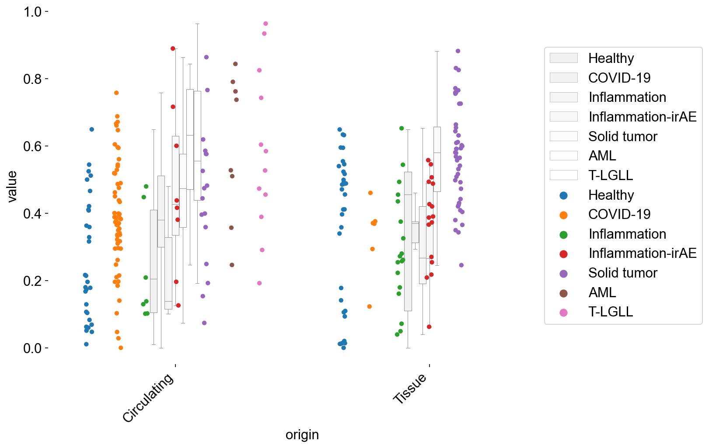

SetupEnvironment
Contents
SetupEnvironment¶
cd /Volumes/rsch/GEXnotebook/
/Volumes/rsch/GEXnotebook
pwd
'/Volumes/rsch/GEXnotebook'
import time
import xlwt
import gseapy
import scanpy as sc
import scirpy as ir
import scvelo as scv
import numpy as np
import pandas as pd
import networkx as nx
import seaborn as sns
import matplotlib.pyplot as plt
import matplotlib as mpl
from collections import Counter
from scipy import stats
from scipy.integrate import odeint
from matplotlib_venn import venn2
from scanpy.plotting._anndata import _prepare_dataframe
setPltLinewidth(0)
plt.rcParams.update(plt.rcParamsDefault)
plt.rcParams['figure.dpi'] = 150
plt.rcParams['savefig.dpi'] = 150
plt.rcParams['font.size'] = 15
plt.rcParams['axes.linewidth'] = 0
plt.rcParams['font.family'] = "Arial"
mpl.rcParams['pdf.fonttype'] = 42
mpl.rcParams['ps.fonttype'] = 42
# color_palette
subtype_color = {
'Tn':'#CEBF8F',
'Tcm':'#ffbb78',
'Early Tcm/Tem':'#ff7f0e',
'GZMK+ Tem':'#d62728',
'CREM+ Tm':'#aa40fc',
'KLRG1+ Temra':'#8c564b',
'KLRG1- Temra':'#e377c2',
'IFITM3+KLRG1+ Temra':'#b5bd61',
'MAIT':'#17becf',
'ILTCK':'#aec7e8',
'ITGAE+ Trm':'#279e68',
'ITGB2+ Trm':'#98df8a',
'SELL+ progenitor Tex':'#ff9896',
'GZMK+ Tex':'#c5b0d5',
'CXCR6+ Tex':'#c49c94',
'Cycling T':'#f7b6d2'
}
main_type_color = {
'Tn':'#CEBF8F',
'Tcm/Tem':'#DC977F',
'Temra':'#EC6C72',
'MAIT':'#CE7FA4',
'ILTCK':'#684391',
'Trm':'#599647',
'Tex':'#8494B5',
'Cycling':'#AC522B'
}
disease_type_color = {
'Healthy':"#E84C36",
'COVID-19':"#4CBDD7",
'Inflammation':"#1DA088",
'Inflammation-irAE':"#3C5589",
'Solid tumor':"#F49C7F",
'AML':"#8492B5",
'T-LGLL':"#91D1C2",
}
meta_tissue_type_color = {
"Circulating":'#ff7f0e',
"Tissue":'#1f77b4',
"TIL":'#279e68',
"PBMC/BALF":'#aa40fc'
}
tissue_type_color = {
'PBMC':'#ffbb78',
'T_LGLL_PBMC':'#17becf',
'Normal_BM':'#b5bd61',
'AML_BM':'#e377c2',
'Normal_Tissue':'#aec7e8',
'Inflamed_Tissue':'#8c564b',
'Infected_Tissue':'#ff9896',
'Tumor_infiltrating_lymphocyte':'#98df8a',
'PBMC/BALF':'#c5b0d5'
}
condition_color = {
"condition":'#9cdb97',
"control":'#ff8787'
}
tissue_type_color_detail = [
'#ffbb78',
'#17becf',
'#b5bd61',
'#e377c2',
'#aec7e8',
'#8c564b',
'#ff9896',
'#98df8a',
'#c5b0d5',
]
# lists
cell_types = [
'T cell',
'CD45RA- Memory T cell',
'CD45RA-CD25+CD127- Memory Treg',
'CD154+CD69+ stimulated T cell'
]
leidens = [
'0',
'1',
'2',
'3',
'4',
'5',
'6',
'7',
'8',
'9',
'10',
'11',
'12',
'14',
'15',
'16'
]
disease_types = [
'Healthy',
'COVID-19',
'Inflammation',
'Inflammation-irAE',
'Solid tumor',
'AML',
'T-LGLL'
]
treatment_types = [
'Treatment-naive',
'anti-PD1',
'anti-PD1_anti-CTLA4',
'anti-CD52'
]
response_types = [
'Non-cancer',
'Treatment-naive',
'Unknown Efficacy',
'Resistant',
'Partial Response',
'Complete Response'
]
cell_subtypes = [
'Tn',
'Tcm',
'Early Tcm/Tem',
'GZMK+ Tem',
'CREM+ Tm',
'KLRG1+ Temra',
'KLRG1- Temra',
'IFITM3+KLRG1+ Temra',
'MAIT',
'ILTCK',
'ITGAE+ Trm',
'ITGB2+ Trm',
'SELL+ progenitor Tex',
'GZMK+ Tex',
'CXCR6+ Tex',
'Cycling T'
]
cell_subtype_aggrs = [
'Tn',
'Tcm/Tem',
'Temra',
'MAIT',
'ILTCK',
'Trm',
'Tex',
'Cycling'
]
meta_tissue_types = [
'PBMC',
'T_LGLL_PBMC',
'Normal_BM',
'AML_BM',
'Normal_Tissue',
'Inflamed_Tissue',
'Infected_Tissue',
'Tumor_infiltrating_lymphocyte',
'PBMC/BALF'
]
meta_tissue_type_aggrs = [
"Circulating",
"Tissue",
"TIL",
"PBMC/BALF"
]
expansion_levels = [
'No expansion',
'Expansion2-5',
'Expansion6-50',
'Expansion51-100',
'Expansion>100'
]
COVID_states = [
'Asymptomatic Patient (AS)',
'Mild',
'Severe',
'Recovered',
'Unknown',
'Non-COVID-19'
]
circ_tissue = [
'Boland_2020', # UC
'Borcherding_2021', # ccRCC
'Kim_2022', # irAE-Arthritis
'Krishna_2021', # ccRCC
'Liu_2021', # NPC
'Simone_2021' # AS
]
circ_tissue_id = [
'AS01',
'AS02',
'C16',
'C17',
'C18',
'C19',
'C21',
'C30',
'C33',
'GU0700',
'GU0715',
'GU0744',
'NPC_SC_1802',
'NPC_SC_1805',
'NPC_SC_1806',
'NPC_SC_1807',
'NPC_SC_1808',
'NPC_SC_1810',
'NPC_SC_1811',
'NPC_SC_1813',
'NPC_SC_1815',
'NPC_SC_1816',
'IpiNivo_Complete',
'IpiNivo_Mixed',
'IpiNivo_Resistant',
'NivoExposed',
'U34',
'U35',
'U4',
'U41',
'U44',
'U45',
'U5',
'irAE_40',
'irAE_45',
'irAE_56',
'irAE_62',
'irAE_63',
'irAE_65',
'irAE_7',
'irAE_76'
]
LoadData¶
# Load adata
# adata_nogex = sc.read_h5ad("/Volumes/rsch/20221005_cd8_subset/20221005_cd8_nogex.h5ad")
adata_nogex = sc.read_h5ad("/Volumes/rsch/20230327_new_hotspot_adata.h5ad")
adata_test = sc.read_h5ad("./source/adata_nogex.h5ad")
adata_nogex = adata_test
# Load obs file
obs = pd.read_csv("/Volumes/qwet/wlz_tmp/20221107_obs.csv",low_memory=False)
obs.index = obs["Unnamed: 0"]
del obs['Unnamed: 0']
obs.loc[obs['sample_name'].str.contains('SF'), "meta_tissue_type"] = "Inflamed_Tissue"
obs.loc[obs['sample_name'].str.contains('ST'), "meta_tissue_type"] = "Inflamed_Tissue"
obs.loc[obs['sample_name'].str.contains('SF'), "meta_tissue_type_aggr"] = "Tissue"
obs.loc[obs['sample_name'].str.contains('ST'), "meta_tissue_type_aggr"] = "Tissue"
obs.loc[obs['sample_name'].str.contains('CPInc'), 'disease'] = 'CPInc'
obs.loc[obs['sample_name'].str.contains('CPInc'), 'disease_type'] = 'Healthy'
obs.loc[obs['sample_name'].str.contains('Blood'), 'meta_tissue_type'] = 'PBMC'
obs.loc[obs['sample_name'].str.contains('Blood'), 'meta_tissue_type_aggr'] = 'Circulating'
obs.loc[obs['sample_name'].str.contains('Marrow'), 'meta_tissue_type'] = 'Normal_BM'
obs.loc[obs['sample_name'].str.contains('Marrow'), 'meta_tissue_type_aggr'] = 'Circulating'
obs.loc[obs['sample_name'].str.contains('IpiNivo_Mixed'), "response_type_rmpre"] = "Partial Response"
obs.loc[obs['sample_name']=='Synovial_fluid_7', 'individual_id'] = 'irAE_7'
obs.loc[obs['sample_name']=='Synovial_fluid_76', 'individual_id'] = 'irAE_76'
obs.loc[obs['sample_name'].str.contains('_ST'), 'cell_type'] = 'T cell'
obs['leiden'] = obs['leiden'].astype("str")
obs['leiden'] = obs['leiden'].astype("category")
obs['expansion_level'] = obs['expansion_level'].astype("category")
obs['cell_type'] = obs['cell_type'].astype("category")
obs['cell_subtype'] = obs['cell_subtype'].astype("category")
obs['cell_subtype_aggr'] = obs['cell_subtype_aggr'].astype("category")
obs['meta_tissue_type'] = obs['meta_tissue_type'].astype("category")
obs['meta_tissue_type_aggr'] = obs['meta_tissue_type_aggr'].astype("category")
obs['disease_type'] = obs['disease_type'].astype("category")
obs['COVID_state'] = obs['COVID_state'].astype("category")
obs['response_type_rmpre'] = obs['response_type_rmpre'].astype("category")
obs['treatment_type'] = obs['treatment_type'].astype("category")
obs['leiden'] = obs['leiden'].cat.reorder_categories(leidens, ordered=True)
obs['expansion_level'] = obs['expansion_level'].cat.reorder_categories(expansion_levels, ordered=True)
obs['cell_type'] = obs['cell_type'].cat.reorder_categories(cell_types, ordered=True)
obs['cell_subtype'] = obs['cell_subtype'].cat.reorder_categories(cell_subtypes, ordered=True)
obs['cell_subtype_aggr'] = obs['cell_subtype_aggr'].cat.reorder_categories(cell_subtype_aggrs, ordered=True)
obs['meta_tissue_type'] = obs['meta_tissue_type'].cat.reorder_categories(meta_tissue_types, ordered=True)
obs['meta_tissue_type_aggr'] = obs['meta_tissue_type_aggr'].cat.reorder_categories(meta_tissue_type_aggrs, ordered=True)
obs['disease_type'] = obs['disease_type'].cat.reorder_categories(disease_types, ordered=True)
obs['COVID_state'] = obs['COVID_state'].cat.reorder_categories(COVID_states, ordered=True)
obs['response_type_rmpre'] = obs['response_type_rmpre'].cat.reorder_categories(response_types, ordered=True)
adata_nogex.obs = obs.copy()
adata_nogex.write_h5ad('./source/adata_nogex.h5ad')
ClonotypeTableProcessing¶
ClonotypeDefinition¶
TRAB_DEFINITION_ORIG
['IR_VJ_1_junction_aa',
'IR_VDJ_1_junction_aa',
'IR_VJ_1_v_call',
'IR_VJ_1_j_call',
'IR_VDJ_1_v_call',
'IR_VDJ_1_j_call']
adata_nogex.obs['tcr'] = list(map(lambda x: '-'.join(x),
adata_nogex.obs.loc[:,TRAB_DEFINITION_ORIG + ['individual_id']].to_numpy()
))
adata_nogex.obs['tcr']
Unnamed: 0
AAACCTGAGAAACCAT-Krishna_2021-IpiNivo_Mixed_Center CAASRNNNDMRF-CASSSLGNEQFF-TRAV13-1-TRAJ43-TRBV...
AAACCTGAGAAACCTA-Gao_2020-UPN17_pre CAVEGDHSGSARQLTF-CSVEDWTDNEQFF-TRAV36DV7-TRAJ2...
AAACCTGAGAAACCTA-Liu_2021-NPC_SC_1813_PBMC CAVSRASGGYNKLIF-CASSLAGQTSRSYNEQFF-TRAV8-4-TRA...
AAACCTGAGAAACGAG-Azizi_2018-BC09_TUMOR2 CAFTAGGGNKLTF-CASSPSWGLNAGELFF-TRAV24-TRAJ10-T...
AAACCTGAGAAACGAG-Ramaswamy_2021-PBMC_P5_1_Moderate CAASADSNSGYALNF-CASALNEKLFF-TRAV29DV5-TRAJ41-T...
...
TTTGGTTTCATCTGCC-Simone_2021-AS02_SF CLPVSGWEGGGNKLTF-CASSLDSPEQYF-TRAV26-1-TRAJ10-...
TTTGTCAAGCGTAATA-Simone_2021-AS02_SF CAMKGNAGNNRKLIW-CASSWTGVISGNTIYF-TRAV14DV4-TRA...
TTTGTCAAGCTGTCTA-Simone_2021-AS02_SF CAERDGYSTLTF-CSARARSYNEQFF-TRAV5-TRAJ11-TRBV20...
TTTGTCACATCACGTA-Simone_2021-AS02_SF CVVRKPQDYNNARLMF-CASSLGGSYNEQFF-TRAV8-2-TRAJ31...
TTTGTCAGTTGCGTTA-Simone_2021-AS02_SF CAMRESNTGRRALTF-CASSSDRDRGREQYF-TRAV14DV4-TRAJ...
Name: tcr, Length: 515029, dtype: object
cloneid = dict(zip(np.unique(adata_nogex.obs['tcr']), list(range(len(np.unique(adata_nogex.obs['tcr']))))))
adata_nogex.obs['cc_aa_identity'] = list(map(cloneid.get, adata_nogex.obs['tcr']))
len(np.unique(adata_nogex.obs['tcr']))
238120
def clone_df_generate(adata):
clonotype_composition = pandas_aggregation_to_wide ( adata.obs.groupby("cc_aa_identity").agg({
"cell_subtype": lambda x: dict(Counter(x))
}) )
clone_df = pd.DataFrame(list(clonotype_composition['cell_subtype'].to_numpy()),
index=clonotype_composition['cc_aa_identity']).fillna(0)
cell_subtypes = [
'Tn',
'Tcm',
'Early Tcm/Tem',
'GZMK+ Tem',
'CREM+ Tm',
'KLRG1+ Temra',
'KLRG1- Temra',
'IFITM3+KLRG1+ Temra',
'MAIT',
'ILTCK',
'ITGAE+ Trm',
'ITGB2+ Trm',
'SELL+ progenitor Tex',
'GZMK+ Tex',
'CXCR6+ Tex',
'Cycling T'
]
clone_df = clone_df[cell_subtypes]
clone_df['total'] = clone_df.iloc[:,0:16].sum(axis=1)
clone_df['total_Tcmem'] = clone_df.iloc[:,1:5].sum(axis=1)
clone_df['total_Temra'] = clone_df.iloc[:,5:8].sum(axis=1)
clone_df['total_Trm'] = clone_df.iloc[:,10:12].sum(axis=1)
clone_df['total_Tex'] = clone_df.iloc[:,13:15].sum(axis=1)
# add cell source
meta_tissue_type_composition = pandas_aggregation_to_wide ( adata.obs.groupby("cc_aa_identity").agg({
"meta_tissue_type_aggr": lambda x: dict(Counter(x))
}) )
clone_df = clone_df.join(pd.DataFrame(list(
meta_tissue_type_composition['meta_tissue_type_aggr'].to_numpy()
), index=meta_tissue_type_composition['cc_aa_identity']).fillna(0))
for i in ['individual_id', 'study_name', 'sample_name', 'disease', 'disease_type']:
cloneid_to_obs = dict(zip(adata.obs['cc_aa_identity'], adata.obs[i]))
clone_df[i] = list(map(cloneid_to_obs.get, clone_df.index))
# define expansion
clone_df.loc[clone_df['total']>=3, 'expansion']='Expanded'
clone_df.loc[clone_df['total']<3, 'expansion']='NoExpanded'
# define dominant clonotype
# define ambiguous clonotype with equal maximum value
_clone = clone_df.iloc[:,0:15]
clone_df['dominant'] = _clone.idxmax(axis=1)
clone_df['dominant_num'] = _clone.max(axis=1)
clone_df['non_dominant_num'] = clone_df['total']-clone_df['dominant_num']
amb_id = _clone.eq(_clone.max(axis=1), axis=0).sum(axis=1)
clone_df['dominant'] = clone_df['dominant'].mask(amb_id > 1, 'Equality')
return clone_df
clone_subtype = clone_df_generate(adata_nogex)
Counter(clone_subtype.dominant)
Counter({'Tn': 73081,
'ITGB2+ Trm': 4907,
'CXCR6+ Tex': 7143,
'GZMK+ Tex': 13446,
'Early Tcm/Tem': 13775,
'GZMK+ Tem': 16537,
'Tcm': 31615,
'ITGAE+ Trm': 22547,
'KLRG1+ Temra': 10445,
'MAIT': 8408,
'SELL+ progenitor Tex': 5477,
'Equality': 12048,
'CREM+ Tm': 11935,
'ILTCK': 3724,
'KLRG1- Temra': 2785,
'IFITM3+KLRG1+ Temra': 247})
clonesize_to_obs = dict(zip(clone_subtype.index, clone_subtype['total']))
adata_nogex.obs['cc_aa_identity_size'] = list(map(clonesize_to_obs.get, adata_nogex.obs['cc_aa_identity']))
adata_nogex.obs.loc[adata_nogex.obs['cc_aa_identity_size']==1, 'expansion_level']='No expansion'
adata_nogex.obs.loc[adata_nogex.obs['cc_aa_identity_size'].isin(range(2,6)),
'expansion_level']='Expansion2-5'
adata_nogex.obs.loc[adata_nogex.obs['cc_aa_identity_size'].isin(range(6,51)),
'expansion_level']='Expansion6-50'
adata_nogex.obs.loc[adata_nogex.obs['cc_aa_identity_size'].isin(range(51,101)),
'expansion_level']='Expansion51-100'
adata_nogex.obs.loc[adata_nogex.obs['cc_aa_identity_size']>100,
'expansion_level']='Expansion>100'
adata_nogex.obs.loc[adata_nogex.obs['cc_aa_identity_size']==1, 'expansion_size']='1'
adata_nogex.obs.loc[adata_nogex.obs['cc_aa_identity_size']==2, 'expansion_size']='2'
adata_nogex.obs.loc[adata_nogex.obs['cc_aa_identity_size']>=3, 'expansion_size']='Larger3'
adata_noLGLL = adata_nogex[adata_nogex.obs['disease'] != "Large granular lymphocyte leukemia"]
adata_noLGLL = adata_test[adata_test.obs['disease'] != "Large granular lymphocyte leukemia"]
# Subset adata
# LGLL subset
adata_LGLL = adata_nogex[adata_nogex.obs['disease'] == "Large granular lymphocyte leukemia"]
# non-LGLL subset
adata_noLGLL = adata_nogex[adata_nogex.obs['disease'] != "Large granular lymphocyte leukemia"]
adata_circ_tissue = adata_nogex[adata_nogex.obs['individual_id'].isin(circ_tissue_id)]
# condition_types_subset
adata_healthy = adata_noLGLL[adata_noLGLL.obs['disease_type']=='Healthy']
adata_covid = adata_noLGLL[adata_noLGLL.obs['disease_type']=='COVID-19']
adata_inflam_irae = adata_noLGLL[adata_noLGLL.obs['disease_type'].str.contains('Inflammation')]
adata_inflammation = adata_noLGLL[adata_noLGLL.obs['disease_type']=='Inflammation']
adata_inflammation_irAE = adata_noLGLL[adata_noLGLL.obs['disease_type']=='Inflammation-irAE']
adata_stumor = adata_noLGLL[adata_noLGLL.obs['disease_type']=='Solid tumor']
adata_AML = adata_noLGLL[adata_noLGLL.obs['disease_type']=='AML']
# tissue_types_subset
kid_studies = ['Wang_2021', 'Ramaswamy_2021']
adata_nokid = adata_nogex[~adata_nogex.obs['study_name'].isin(kid_studies)]
adata_circ = adata_nogex[adata_nogex.obs['meta_tissue_type_aggr'].str.contains('Circulating')]
adata_circ_nokid = adata_circ[~adata_circ.obs['study_name'].isin(kid_studies)]
adata_tissue = adata_nogex[adata_nogex.obs['meta_tissue_type'].str.contains('Tissue')]
adata_tissue_TIL = adata_nogex[(adata_nogex.obs['meta_tissue_type'].str.contains('Tissue')) |
(adata_nogex.obs['meta_tissue_type'] == 'Tumor_infiltrating_lymphocyte')]
adata_tissue_TIL_nokid = adata_tissue_TIL[~adata_tissue_TIL.obs['study_name'].isin(kid_studies)]
# condition_tissue_subset
adata_healthy_tissue = adata_healthy[adata_healthy.obs['meta_tissue_type'].str.contains('Tissue')]
adata_covid_tissue = adata_covid[adata_covid.obs['meta_tissue_type'].str.contains('Tissue')]
adata_inflam_tissue = adata_inflammation[adata_inflammation.obs['meta_tissue_type'].str.contains('Tissue')]
adata_irae_tissue = adata_inflammation_irAE[adata_inflammation_irAE.obs['meta_tissue_type'].str.contains('Tissue')]
adata_healthy_circ = adata_healthy[adata_healthy.obs['meta_tissue_type_aggr'] == 'Circulating']
adata_covid_circ = adata_covid[adata_covid.obs['meta_tissue_type_aggr'] == 'Circulating']
adata_inflam_circ = adata_inflammation[adata_inflammation.obs['meta_tissue_type_aggr'] == 'Circulating']
adata_irae_circ = adata_inflammation_irAE[adata_inflammation_irAE.obs['meta_tissue_type_aggr'] == 'Circulating']
adata_TIL = adata_stumor[adata_stumor.obs['meta_tissue_type'] == 'Tumor_infiltrating_lymphocyte']
adata_stumor_circ = adata_stumor[adata_stumor.obs['meta_tissue_type_aggr'] == 'Circulating']
# disease_subset
adata_colon_healthy = adata_healthy_tissue[adata_healthy_tissue.obs['study_name'].str.contains("Boland") |
adata_healthy_tissue.obs['study_name'].str.contains("Corridoni") |
adata_healthy_tissue.obs['study_name'].str.contains("Luoma")]
adata_UC = adata_noLGLL[adata_noLGLL.obs['disease'].str.contains('Ulcerative')]
adata_UC_tissue = adata_UC[adata_UC.obs['meta_tissue_type'].str.contains('Tissue')]
adata_UC_circ = adata_UC[adata_UC.obs['meta_tissue_type_aggr'].str.contains('Circ')]
adata_irae_arth = adata_noLGLL[adata_noLGLL.obs['study_name'].str.contains('Kim_2022')]
adata_irae_arth_circ = adata_irae_arth[adata_irae_arth.obs['meta_tissue_type_aggr'] == 'Circulating']
adata_irae_arth_tissue = adata_irae_arth[adata_irae_arth.obs['meta_tissue_type'].str.contains('Tissue')]
adata_irae_colitis = adata_noLGLL[adata_noLGLL.obs['disease'].str.contains("CPI-colitis")]
# cell_subtype subset
adata_ex = adata_nogex[(adata_nogex.obs['cell_subtype']=="GZMK+ Tex") |
(adata_nogex.obs['cell_subtype']=="CXCR6+ Tex")]
SharingClonotype¶
def sharing_info(clone_info):
clone_info_expanded = clone_info[(clone_info['total']>=3)]
for i in cell_subtypes:
# larger than 20% of cells
clone_info_expanded.loc[clone_info_expanded[i]>=0.2*clone_info_expanded['total'], i]=i
clone_info_expanded.loc[clone_info_expanded[i]!=i, i]=None
clone_info_expanded['sharing_type'] = clone_info_expanded.loc[:, cell_subtypes].apply(
lambda x: '='.join(x.dropna().astype(str)), axis=1
)
clone_info_expanded['sharing_type'] = clone_info_expanded['sharing_type'].mask(
~clone_info_expanded['sharing_type'].str.contains('='), 'NoSharing')
clone_info['sharing_type'] = clone_info_expanded['sharing_type'] # transfer
return clone_info
def dominant_sharing_info(clone_info):
clone_info_expanded = clone_info[(clone_info['total']>=3)]
clone_info_expanded_number = clone_info_expanded.iloc[:,0:16]
clone_info_expanded_number['Cycling T'] = 0 # exclude cycling
# for i in cell_subtypes[:-1]:
# # clone_info_expanded_number.loc[clone_info_expanded_number[i]<3, i]=0
# clone_info_expanded_number.loc[
# clone_info_expanded_number[i]<0.2*clone_info_expanded['total'], i]=0
clone_info_expanded['first'] = clone_info_expanded_number.columns[
clone_info_expanded_number.values.argsort(1)[:, -1]]
clone_info_expanded['second'] = clone_info_expanded_number.columns[
clone_info_expanded_number.values.argsort(1)[:, -2]]
# require the second not equal to the third
zero_id = clone_info_expanded_number.apply(
lambda row: row.nlargest(2).values[-1],axis=1) == 0
clone_info_expanded['first'] = clone_info_expanded['first'].mask(zero_id, 'NoSharing')
clone_info_expanded['second'] = clone_info_expanded['second'].mask(zero_id, 'NoSharing')
clone_info_expanded_number = clone_info_expanded_number[zero_id==False]
qualified_id = clone_info_expanded_number.apply(
lambda row: row.nlargest(2).values[-1],axis=1) == clone_info_expanded_number.apply(
lambda row: row.nlargest(3).values[-1],axis=1)
qualified_id = qualified_id[qualified_id==True]
clone_info_expanded.loc[clone_info_expanded.index.isin(qualified_id.index), 'first'] = 'Equality'
clone_info_expanded.loc[clone_info_expanded.index.isin(qualified_id.index), 'second'] = 'Equality'
clone_info['first'] = clone_info_expanded['first']
clone_info['second'] = clone_info_expanded['second']
return clone_info
clone_subtype = sharing_info(clone_subtype)
clone_subtype = dominant_sharing_info(clone_subtype)
Part1GEX/TCRfeatures¶
Functions¶
# color palette
from colour import Color
from matplotlib.colors import LinearSegmentedColormap
def make_colormap( colors, show_palette = False ):
color_ramp = LinearSegmentedColormap.from_list( 'my_list', [ Color( c1 ).rgb for c1 in colors ] )
if show_palette:
plt.figure( figsize = (15,3))
plt.imshow( [list(np.arange(0, len( colors ) , 0.1)) ] , interpolation='nearest', origin='lower', cmap= color_ramp )
plt.xticks([])
plt.yticks([])
return color_ramp
StatsFunctions¶
# D50 stats
def clone_D50(adata, xaxis, xaxis_label):
# stats
ir.tl.alpha_diversity(adata, groupby='individual_id', target_col='cc_aa_identity',
metric='D50', key_added='D50_sample')
qualified_id = [x for x,y in Counter(adata.obs.individual_id).items() if y>100]
adata = adata[adata.obs['individual_id'].isin(qualified_id)]
D50_group = adata.obs[['individual_id', 'D50_sample', xaxis_label]].drop_duplicates(subset='individual_id')
D50_group.index = D50_group['individual_id']
D50_group[xaxis_label] = D50_group[xaxis_label].astype('category')
D50_group['D50_sample'] = D50_group['D50_sample'].astype('float')
D50_group = D50_group.replace(0, np.nan).iloc[:, 1:]
return D50_group
# Gini index calculation
def gini(wealths):
cum_wealths = np.cumsum(sorted(np.append(wealths, 0)))
sum_wealths = cum_wealths[-1]
xarray = np.array(range(0, len(cum_wealths))) / np.float64(len(cum_wealths) - 1)
upper = xarray # 45 angle line
yarray = cum_wealths / sum_wealths
plt.plot(xarray, yarray)
plt.plot(xarray, upper)
B = np.trapz(yarray, x=xarray) # calculate AUC
A = 0.5 - B
G = A / (A + B)
return G
def clone_gini(adata, xaxis, xaxis_label):
qualified_id = [x for x,y in Counter(adata.obs.individual_id).items() if y>100]
adata = adata[adata.obs['individual_id'].isin(qualified_id)]
clone_gini_df = pd.DataFrame([])
sample_num = []
for i in xaxis:
clone_group = []
adata_subgroup = adata[adata.obs[xaxis_label]==i]
sample_subgroup = np.unique(adata_subgroup.obs['individual_id'])
sample_num.append(len(sample_subgroup))
for j in sample_subgroup:
subgroup_sample = adata_subgroup.obs[adata_subgroup.obs['individual_id']==j]
clone_sample = dict(Counter(subgroup_sample.cc_aa_identity))
G = gini(list(clone_sample.values()))
clone_group.append(G)
clone_gini_df = pd.concat([clone_gini_df, pd.Series(clone_group, index=sample_subgroup)], axis=0)
conditions = [np.repeat(i,sample_num[idx]) for idx,i in enumerate(xaxis)]
clone_gini_df[xaxis_label] = [y for x in conditions for y in x ]
clone_gini_df[0] = clone_gini_df[0].astype(float)
return clone_gini_df
# circ_tissue cbind df
def cbind_df(adata_circ, adata_tissue, xaxis, xaxis_label, index_type):
if index_type == 'D50':
df1 = clone_D50(adata_circ, xaxis=xaxis, xaxis_label=xaxis_label)
df2 = clone_D50(adata_tissue, xaxis=xaxis, xaxis_label=xaxis_label)
else:
df1 = clone_gini(adata_circ, xaxis=xaxis, xaxis_label=xaxis_label)
df2 = clone_gini(adata_tissue, xaxis=xaxis, xaxis_label=xaxis_label)
df1['origin'] = 'Circulating'
df2['origin'] = 'Tissue'
multi_box = pd.concat([df1, df2], axis=0)
multi_box = multi_box.rename(columns={multi_box.columns[0]: "value", multi_box.columns[1]: "variable"})
multi_box["variable"] = multi_box["variable"].astype('category')
multi_box["variable"] = multi_box["variable"].cat.reorder_categories(xaxis)
return multi_box
PlotsFunctions¶
# general bar function
def general_bar(data, target_col, ylim0, ylim1, file_name):
data = data.sort_values(by=target_col, ascending=False)
width = 0.5
fig,ax = plt.subplots(figsize=(10,8))
ax.set_ylabel(target_col)
ax.set_ylim(ylim0, ylim1)
ax.bar(range(len(data)),
[x-ylim0 for x in data[target_col]], bottom=ylim0,
width=width, align='center', edgecolor=None, color=data['colors'])
ax.set_xticks(range(len(data)))
ax.set_xticklabels(data.index, rotation=45, horizontalalignment='right')
plt.show()
fig.savefig(file_name)
# stacked_bar function
def stacked_bar(adata, percentage, xitems, xitem_str,
yitems, yitem_str, *, yitem_color,
file_name:str):
# stats
stats = []
for j in yitems:
cell_num = [len(adata.obs[(adata.obs[yitem_str]==j) &
(adata.obs[xitem_str]==i)])
for i in xitems]
stats.append(cell_num)
stats = np.array(stats)
# plots
x = range(len(xitems))
width = 0.35
fig,ax = plt.subplots(figsize=(10,8))
bottom_y = np.zeros(len(xitems))
sums = np.sum(stats, axis=0)
for idx,i in enumerate(stats):
if percentage == True:
y = i / sums # bar height (percentage)
else:
y=i
ax.bar(x, y, width, bottom=bottom_y, edgecolor=None,
label=yitems[idx], color=list(yitem_color.values())[idx])
# bottom position
bottom_y = y + bottom_y
ax.spines['right'].set_visible(False)
ax.spines['top'].set_visible(False)
plt.xticks(x, xitems)
plt.legend(bbox_to_anchor=(1.3, 0.5), loc='center right')
fig.autofmt_xdate(rotation=45)
fig.savefig(file_name)
plt.show()
# pie_plot function
def pie_plot(adata, items, item_str, item_color, file_name):
# SupFigure1BR
# stats
requested_percent = [len(adata.obs[(adata.obs[item_str]==i)]) for i in items]
requested_percent = np.array(requested_percent)
# plots
fig, ax = plt.subplots(figsize=(10,8))
ax.pie(requested_percent, radius=1,
colors=item_color.values(),
autopct='%1.0f%%', pctdistance=1.2,
wedgeprops=dict(width=0.3, edgecolor='w'))
ax.legend(items,
title=item_str,
loc="center left",
fontsize="small",
bbox_to_anchor=(1,0,0.5,1))
fig.savefig(file_name)
plt.show()
# multi boxplot
def multi_boxplot(multi_box, file_name,
xaxis='variable', yaxis='value', hueaxis='origin'):
fig,ax = plt.subplots(figsize=(10,8))
sns.boxplot(x=xaxis, y=yaxis, hue=hueaxis, data=multi_box,
linewidth=0.5, color="white", boxprops={"zorder":2},
showfliers=False, width=0.2, ax=ax)
# Extract x and y coordinates of the dots
sns.stripplot(x=xaxis, y=yaxis, hue=hueaxis,
dodge=True, data=multi_box, ax=ax)
ax.spines['right'].set_visible(False)
ax.spines['top'].set_visible(False)
plt.legend(bbox_to_anchor=(1.3, 0.5), loc='center right')
fig.autofmt_xdate(rotation=45)
fig.savefig(file_name)
plt.show()
MainFigure1¶
# Cell subtype UMAP, Figure1B
sc.pl.umap(adata_nogex, color="leiden", size=2)
# Cell subtype UMAP, Figure1B
sc.pl.umap(adata_nogex, color="predictions", size=2)
# Cell subtype UMAP, Figure1B
sc.pl.umap(adata_nogex, color="cell_subtype", size=2, palette=subtype_color)
# Cell subtype marker, Figure1C
sc.pl.dotplot(adata_nogex, var_names=["S1PR1", "SELL", "IL7R", "KLRG1", "GZMK", "CREM",
"CX3CR1", "IFITM3",
"KLRB1", "ZBTB16", "FCER1G", "TYROBP",
"ITGAE", "ITGA1", "ITGB2",
"TCF7", "PDCD1", "HAVCR2", "TIGIT", "CXCR6",
"MKI67", "CDC20"],
groupby='cell_subtype', dot_max=0.7,
standard_scale='var')
# D50 cc_aa_identtiy, Figure1D
ir.tl.alpha_diversity(adata_nogex, groupby="cell_subtype", target_col='cc_aa_identity', metric='D50')
adata_nogex.obs["D50_cc_aa_identity"] = adata_nogex.obs["D50_cc_aa_identity"].astype(float)
fig,ax = plt.subplots(figsize=(5,4))
sc.pl.umap(adata_nogex, color="D50_cc_aa_identity",
cmap=make_colormap(['#EAE0DE','#895180','#472B51']),
vmax=50, size=0.5, ax=ax)
fig.savefig('./figures/d50umap.png', dpi=600)
adata_nogex.obs[['cell_subtype','D50_cc_aa_identity']].drop_duplicates()
| cell_subtype | D50_cc_aa_identity | |
|---|---|---|
| Unnamed: 0 | ||
| AAACCTGAGAAACCAT-Krishna_2021-IpiNivo_Mixed_Center | GZMK+ Tex | 3.368897 |
| AAACCTGAGAAACCTA-Gao_2020-UPN17_pre | ILTCK | 45.134765 |
| AAACCTGAGAAACCTA-Liu_2021-NPC_SC_1813_PBMC | Tn | 49.655809 |
| AAACCTGAGAAACGAG-Azizi_2018-BC09_TUMOR2 | GZMK+ Tem | 9.091773 |
| AAACCTGAGAACAACT-Neal_2018-ccRCC_2_ft_rep2 | ITGB2+ Trm | 17.223127 |
| AAACCTGAGAACTCGG-Gao_2020-UPN15_pre | IFITM3+KLRG1+ Temra | 0.185357 |
| AAACCTGAGAAGATTC-Boland_2020-U35_PBMC | KLRG1+ Temra | 2.048972 |
| AAACCTGAGAAGGCCT-Gao_2020-UPN4_post | KLRG1- Temra | 0.021617 |
| AAACCTGAGAAGGTTT-Luoma_2020-CPInc_NC4 | ITGAE+ Trm | 12.935167 |
| AAACCTGAGAATCTCC-Gao_2020-UPN4_pre | Early Tcm/Tem | 35.206707 |
| AAACCTGAGACAAGCC-Yost_2019-su010_post_SCC_CD39_Tcell | CXCR6+ Tex | 3.404387 |
| AAACCTGAGACTAGGC-Gao_2020-HD5 | MAIT | 30.163790 |
| AAACCTGAGAGGTTGC-Yost_2019-su004_pre | CREM+ Tm | 12.369467 |
| AAACCTGAGAGTAATC-Boland_2020-U4_PBMC | Tcm | 42.404547 |
| AAACCTGAGATATGCA-Yost_2019-su014_pre_Tcell | Cycling T | 9.843732 |
| AAACCTGAGCGTTTAC-Liu_2021-NPC_SC_1811_Tumor | SELL+ progenitor Tex | 44.530524 |
# D50 cc_aa_identity, Figure1E
kid_studies = ['Wang_2021', 'Ramaswamy_2021']
adata_circ = adata_nogex[adata_nogex.obs['meta_tissue_type_aggr'].str.contains('Circulating')]
adata_circ_nokid = adata_circ[~adata_circ.obs['study_name'].isin(kid_studies)]
adata_tissue_TIL = adata_nogex[(adata_nogex.obs['meta_tissue_type'].str.contains('Tissue')) |
(adata_nogex.obs['meta_tissue_type'] == 'Tumor_infiltrating_lymphocyte')]
adata_tissue_TIL_nokid = adata_tissue_TIL[~adata_tissue_TIL.obs['study_name'].isin(kid_studies)]
adata_circ_nokid = adata_circ_nokid[adata_circ_nokid.obs['cell_type']=='T cell']
adata_tissue_TIL_nokid = adata_tissue_TIL_nokid[adata_tissue_TIL_nokid.obs['cell_type']=='T cell']
d50_disease = cbind_df(adata_circ_nokid, adata_tissue_TIL_nokid,
xaxis=disease_types, xaxis_label='disease_type', index_type='D50')
multi_boxplot(d50_disease, xaxis='origin', yaxis='value', hueaxis='variable',
file_name='d50_disease.pdf')
Counter(d50_disease[d50_disease['origin']=='Circulating'].variable)
Counter({'T-LGLL': 12,
'Solid tumor': 17,
'Inflammation': 7,
'Healthy': 30,
'COVID-19': 58,
'AML': 8,
'Inflammation-irAE': 8})
Counter(d50_disease[d50_disease['origin']=='Tissue'].variable)
Counter({'Solid tumor': 44,
'Healthy': 33,
'Inflammation': 18,
'Inflammation-irAE': 16,
'COVID-19': 6})
d50_disease_circulating = d50_disease[d50_disease['origin']=='Circulating']
d50_disease_tissue = d50_disease[d50_disease['origin']=='Tissue']
stats.mannwhitneyu(d50_disease_tissue[d50_disease_tissue['variable']=='Healthy'].value,
d50_disease_tissue[d50_disease_tissue['variable']=='Solid tumor'].value)
MannwhitneyuResult(statistic=1096.5, pvalue=0.00013975964729537183)
# Figure1F, stats of circos plot
clone_cross = clone_subtype[(clone_subtype["study_name"].isin(circ_tissue))]
general_share = dict(Counter(clone_cross['sharing_type']))
general_share_df = pd.DataFrame.from_dict(general_share, orient='index')
general_share_df = general_share_df[general_share_df[0]>=5]
general_share_df.to_csv('./figures/stats/Figure1F.csv')
SupFigures¶
SupTables¶
# stats
sc.tl.rank_genes_groups(adata_nogex, groupby='cell_subtype', method="t-test")
subtype_sheet_names = [
'Tn',
'Tcm',
'EarlyTcmTem',
'GZMK+Tem',
'CREM+Tm',
'KLRG1+Temra',
'KLRG1-Temra',
'IFITM3+Temra',
'MAIT',
'ILTCK',
'ITGAE+Trm',
'ITGB2+Trm',
'SELL+Tpex',
'GZMK+Tex',
'CXCR6+Tex',
'CyclingT'
]
with pd.ExcelWriter('./tables/marker_genes.xls') as marker_excel:
for i,j in zip(cell_subtypes,subtype_sheet_names):
subtype_marker = sc.get.rank_genes_groups_df(adata_nogex, group=i)
subtype_marker = subtype_marker[~subtype_marker['names'].str.startswith('RP') &
~subtype_marker['names'].str.startswith('MT-')]
subtype_marker.to_excel(marker_excel, sheet_name=j, index=False)
TFlist=[
"AC008770.3",
"AC023509.3",
"AC092835.1",
"AC138696.1",
"ADNP",
"ADNP2",
"AEBP1",
"AEBP2",
"AHCTF1",
"AHDC1",
"AHR",
"AHRR",
"AIRE",
"AKAP8",
"AKAP8L",
"AKNA",
"ALX1",
"ALX3",
"ALX4",
"ANHX",
"ANKZF1",
"AR",
"ARGFX",
"ARHGAP35",
"ARID2",
"ARID3A",
"ARID3B",
"ARID3C",
"ARID5A",
"ARID5B",
"ARNT",
"ARNT2",
"ARNTL",
"ARNTL2",
"ARX",
"ASCL1",
"ASCL2",
"ASCL3",
"ASCL4",
"ASCL5",
"ASH1L",
"ATF1",
"ATF2",
"ATF3",
"ATF4",
"ATF5",
"ATF6",
"ATF6B",
"ATF7",
"ATMIN",
"ATOH1",
"ATOH7",
"ATOH8",
"BACH1",
"BACH2",
"BARHL1",
"BARHL2",
"BARX1",
"BARX2",
"BATF",
"BATF2",
"BATF3",
"BAZ2A",
"BAZ2B",
"BBX",
"BCL11A",
"BCL11B",
"BCL6",
"BCL6B",
"BHLHA15",
"BHLHA9",
"BHLHE22",
"BHLHE23",
"BHLHE40",
"BHLHE41",
"BNC1",
"BNC2",
"BORCS8-MEF2B",
"BPTF",
"BRF2",
"BSX",
"C11orf95",
"CAMTA1",
"CAMTA2",
"CARF",
"CASZ1",
"CBX2",
"CC2D1A",
"CCDC169-SOHLH2",
"CCDC17",
"CDC5L",
"CDX1",
"CDX2",
"CDX4",
"CEBPA",
"CEBPB",
"CEBPD",
"CEBPE",
"CEBPG",
"CEBPZ",
"CENPA",
"CENPB",
"CENPBD1",
"CENPS",
"CENPT",
"CENPX",
"CGGBP1",
"CHAMP1",
"CHCHD3",
"CIC",
"CLOCK",
"CPEB1",
"CPXCR1",
"CREB1",
"CREB3",
"CREB3L1",
"CREB3L2",
"CREB3L3",
"CREB3L4",
"CREB5",
"CREBL2",
"CREBZF",
"CREM",
"CRX",
"CSRNP1",
"CSRNP2",
"CSRNP3",
"CTCF",
"CTCFL",
"CUX1",
"CUX2",
"CXXC1",
"CXXC4",
"CXXC5",
"DACH1",
"DACH2",
"DBP",
"DBX1",
"DBX2",
"DDIT3",
"DEAF1",
"DLX1",
"DLX2",
"DLX3",
"DLX4",
"DLX5",
"DLX6",
"DMBX1",
"DMRT1",
"DMRT2",
"DMRT3",
"DMRTA1",
"DMRTA2",
"DMRTB1",
"DMRTC2",
"DMTF1",
"DNMT1",
"DNTTIP1",
"DOT1L",
"DPF1",
"DPF3",
"DPRX",
"DR1",
"DRAP1",
"DRGX",
"DUX1",
"DUX3",
"DUX4",
"DUXA",
"DZIP1",
"E2F1",
"E2F2",
"E2F3",
"E2F4",
"E2F5",
"E2F6",
"E2F7",
"E2F8",
"E4F1",
"EBF1",
"EBF2",
"EBF3",
"EBF4",
"EEA1",
"EGR1",
"EGR2",
"EGR3",
"EGR4",
"EHF",
"ELF1",
"ELF2",
"ELF3",
"ELF4",
"ELF5",
"ELK1",
"ELK3",
"ELK4",
"EMX1",
"EMX2",
"EN1",
"EN2",
"EOMES",
"EPAS1",
"ERF",
"ERG",
"ESR1",
"ESR2",
"ESRRA",
"ESRRB",
"ESRRG",
"ESX1",
"ETS1",
"ETS2",
"ETV1",
"ETV2",
"ETV3",
"ETV3L",
"ETV4",
"ETV5",
"ETV6",
"ETV7",
"EVX1",
"EVX2",
"FAM170A",
"FAM200B",
"FBXL19",
"FERD3L",
"FEV",
"FEZF1",
"FEZF2",
"FIGLA",
"FIZ1",
"FLI1",
"FLYWCH1",
"FOS",
"FOSB",
"FOSL1",
"FOSL2",
"FOXA1",
"FOXA2",
"FOXA3",
"FOXB1",
"FOXB2",
"FOXC1",
"FOXC2",
"FOXD1",
"FOXD2",
"FOXD3",
"FOXD4",
"FOXD4L1",
"FOXD4L3",
"FOXD4L4",
"FOXD4L5",
"FOXD4L6",
"FOXE1",
"FOXE3",
"FOXF1",
"FOXF2",
"FOXG1",
"FOXH1",
"FOXI1",
"FOXI2",
"FOXI3",
"FOXJ1",
"FOXJ2",
"FOXJ3",
"FOXK1",
"FOXK2",
"FOXL1",
"FOXL2",
"FOXM1",
"FOXN1",
"FOXN2",
"FOXN3",
"FOXN4",
"FOXO1",
"FOXO3",
"FOXO4",
"FOXO6",
"FOXP1",
"FOXP2",
"FOXP3",
"FOXP4",
"FOXQ1",
"FOXR1",
"FOXR2",
"FOXS1",
"GABPA",
"GATA1",
"GATA2",
"GATA3",
"GATA4",
"GATA5",
"GATA6",
"GATAD2A",
"GATAD2B",
"GBX1",
"GBX2",
"GCM1",
"GCM2",
"GFI1",
"GFI1B",
"GLI1",
"GLI2",
"GLI3",
"GLI4",
"GLIS1",
"GLIS2",
"GLIS3",
"GLMP",
"GLYR1",
"GMEB1",
"GMEB2",
"GPBP1",
"GPBP1L1",
"GRHL1",
"GRHL2",
"GRHL3",
"GSC",
"GSC2",
"GSX1",
"GSX2",
"GTF2B",
"GTF2I",
"GTF2IRD1",
"GTF2IRD2",
"GTF2IRD2B",
"GTF3A",
"GZF1",
"HAND1",
"HAND2",
"HBP1",
"HDX",
"HELT",
"HES1",
"HES2",
"HES3",
"HES4",
"HES5",
"HES6",
"HES7",
"HESX1",
"HEY1",
"HEY2",
"HEYL",
"HHEX",
"HIC1",
"HIC2",
"HIF1A",
"HIF3A",
"HINFP",
"HIVEP1",
"HIVEP2",
"HIVEP3",
"HKR1",
"HLF",
"HLX",
"HMBOX1",
"HMG20A",
"HMG20B",
"HMGA1",
"HMGA2",
"HMGN3",
"HMX1",
"HMX2",
"HMX3",
"HNF1A",
"HNF1B",
"HNF4A",
"HNF4G",
"HOMEZ",
"HOXA1",
"HOXA10",
"HOXA11",
"HOXA13",
"HOXA2",
"HOXA3",
"HOXA4",
"HOXA5",
"HOXA6",
"HOXA7",
"HOXA9",
"HOXB1",
"HOXB13",
"HOXB2",
"HOXB3",
"HOXB4",
"HOXB5",
"HOXB6",
"HOXB7",
"HOXB8",
"HOXB9",
"HOXC10",
"HOXC11",
"HOXC12",
"HOXC13",
"HOXC4",
"HOXC5",
"HOXC6",
"HOXC8",
"HOXC9",
"HOXD1",
"HOXD10",
"HOXD11",
"HOXD12",
"HOXD13",
"HOXD3",
"HOXD4",
"HOXD8",
"HOXD9",
"HSF1",
"HSF2",
"HSF4",
"HSF5",
"HSFX1",
"HSFX2",
"HSFY1",
"HSFY2",
"IKZF1",
"IKZF2",
"IKZF3",
"IKZF4",
"IKZF5",
"INSM1",
"INSM2",
"IRF1",
"IRF2",
"IRF3",
"IRF4",
"IRF5",
"IRF6",
"IRF7",
"IRF8",
"IRF9",
"IRX1",
"IRX2",
"IRX3",
"IRX4",
"IRX5",
"IRX6",
"ISL1",
"ISL2",
"ISX",
"JAZF1",
"JDP2",
"JRK",
"JRKL",
"JUN",
"JUNB",
"JUND",
"KAT7",
"KCMF1",
"KCNIP3",
"KDM2A",
"KDM2B",
"KDM5B",
"KIN",
"KLF1",
"KLF10",
"KLF11",
"KLF12",
"KLF13",
"KLF14",
"KLF15",
"KLF16",
"KLF17",
"KLF2",
"KLF3",
"KLF4",
"KLF5",
"KLF6",
"KLF7",
"KLF8",
"KLF9",
"KMT2A",
"KMT2B",
"L3MBTL1",
"L3MBTL3",
"L3MBTL4",
"LBX1",
"LBX2",
"LCOR",
"LCORL",
"LEF1",
"LEUTX",
"LHX1",
"LHX2",
"LHX3",
"LHX4",
"LHX5",
"LHX6",
"LHX8",
"LHX9",
"LIN28A",
"LIN28B",
"LIN54",
"LMX1A",
"LMX1B",
"LTF",
"LYL1",
"MAF",
"MAFA",
"MAFB",
"MAFF",
"MAFG",
"MAFK",
"MAX",
"MAZ",
"MBD1",
"MBD2",
"MBD3",
"MBD4",
"MBD6",
"MBNL2",
"MECOM",
"MECP2",
"MEF2A",
"MEF2B",
"MEF2C",
"MEF2D",
"MEIS1",
"MEIS2",
"MEIS3",
"MEOX1",
"MEOX2",
"MESP1",
"MESP2",
"MGA",
"MITF",
"MIXL1",
"MKX",
"MLX",
"MLXIP",
"MLXIPL",
"MNT",
"MNX1",
"MSANTD1",
"MSANTD3",
"MSANTD4",
"MSC",
"MSGN1",
"MSX1",
"MSX2",
"MTERF1",
"MTERF2",
"MTERF3",
"MTERF4",
"MTF1",
"MTF2",
"MXD1",
"MXD3",
"MXD4",
"MXI1",
"MYB",
"MYBL1",
"MYBL2",
"MYC",
"MYCL",
"MYCN",
"MYF5",
"MYF6",
"MYNN",
"MYOD1",
"MYOG",
"MYPOP",
"MYRF",
"MYRFL",
"MYSM1",
"MYT1",
"MYT1L",
"MZF1",
"NACC2",
"NAIF1",
"NANOG",
"NANOGNB",
"NANOGP8",
"NCOA1",
"NCOA2",
"NCOA3",
"NEUROD1",
"NEUROD2",
"NEUROD4",
"NEUROD6",
"NEUROG1",
"NEUROG2",
"NEUROG3",
"NFAT5",
"NFATC1",
"NFATC2",
"NFATC3",
"NFATC4",
"NFE2",
"NFE2L1",
"NFE2L2",
"NFE2L3",
"NFE4",
"NFIA",
"NFIB",
"NFIC",
"NFIL3",
"NFIX",
"NFKB1",
"NFKB2",
"NFX1",
"NFXL1",
"NFYA",
"NFYB",
"NFYC",
"NHLH1",
"NHLH2",
"NKRF",
"NKX1-1",
"NKX1-2",
"NKX2-1",
"NKX2-2",
"NKX2-3",
"NKX2-4",
"NKX2-5",
"NKX2-6",
"NKX2-8",
"NKX3-1",
"NKX3-2",
"NKX6-1",
"NKX6-2",
"NKX6-3",
"NME2",
"NOBOX",
"NOTO",
"NPAS1",
"NPAS2",
"NPAS3",
"NPAS4",
"NR0B1",
"NR1D1",
"NR1D2",
"NR1H2",
"NR1H3",
"NR1H4",
"NR1I2",
"NR1I3",
"NR2C1",
"NR2C2",
"NR2E1",
"NR2E3",
"NR2F1",
"NR2F2",
"NR2F6",
"NR3C1",
"NR3C2",
"NR4A1",
"NR4A2",
"NR4A3",
"NR5A1",
"NR5A2",
"NR6A1",
"NRF1",
"NRL",
"OLIG1",
"OLIG2",
"OLIG3",
"ONECUT1",
"ONECUT2",
"ONECUT3",
"OSR1",
"OSR2",
"OTP",
"OTX1",
"OTX2",
"OVOL1",
"OVOL2",
"OVOL3",
"PA2G4",
"PATZ1",
"PAX1",
"PAX2",
"PAX3",
"PAX4",
"PAX5",
"PAX6",
"PAX7",
"PAX8",
"PAX9",
"PBX1",
"PBX2",
"PBX3",
"PBX4",
"PCGF2",
"PCGF6",
"PDX1",
"PEG3",
"PGR",
"PHF1",
"PHF19 ",
"PHF20",
"PHF21A",
"PHOX2A",
"PHOX2B",
"PIN1",
"PITX1",
"PITX2",
"PITX3",
"PKNOX1",
"PKNOX2",
"PLAG1",
"PLAGL1",
"PLAGL2",
"PLSCR1",
"POGK",
"POU1F1",
"POU2AF1",
"POU2F1",
"POU2F2",
"POU2F3",
"POU3F1",
"POU3F2",
"POU3F3",
"POU3F4",
"POU4F1",
"POU4F2",
"POU4F3",
"POU5F1",
"POU5F1B",
"POU5F2",
"POU6F1",
"POU6F2",
"PPARA",
"PPARD",
"PPARG",
"PRDM1",
"PRDM10",
"PRDM12",
"PRDM13",
"PRDM14",
"PRDM15",
"PRDM16",
"PRDM2",
"PRDM4",
"PRDM5",
"PRDM6",
"PRDM8",
"PRDM9",
"PREB",
"PRMT3",
"PROP1",
"PROX1",
"PROX2",
"PRR12",
"PRRX1",
"PRRX2",
"PTF1A",
"PURA",
"PURB",
"PURG",
"RAG1",
"RARA",
"RARB",
"RARG",
"RAX",
"RAX2",
"RBAK",
"RBCK1",
"RBPJ",
"RBPJL",
"RBSN",
"REL",
"RELA",
"RELB",
"REPIN1",
"REST",
"REXO4",
"RFX1",
"RFX2",
"RFX3",
"RFX4",
"RFX5",
"RFX6",
"RFX7",
"RFX8",
"RHOXF1",
"RHOXF2",
"RHOXF2B",
"RLF",
"RORA",
"RORB",
"RORC",
"RREB1",
"RUNX1",
"RUNX2",
"RUNX3",
"RXRA",
"RXRB",
"RXRG",
"SAFB",
"SAFB2",
"SALL1",
"SALL2",
"SALL3",
"SALL4",
"SATB1",
"SATB2",
"SCMH1",
"SCML4",
"SCRT1",
"SCRT2",
"SCX",
"SEBOX",
"SETBP1",
"SETDB1",
"SETDB2",
"SGSM2",
"SHOX",
"SHOX2",
"SIM1",
"SIM2",
"SIX1",
"SIX2",
"SIX3",
"SIX4",
"SIX5",
"SIX6",
"SKI",
"SKIL",
"SKOR1",
"SKOR2",
"SLC2A4RG",
"SMAD1",
"SMAD3",
"SMAD4",
"SMAD5",
"SMAD9",
"SMYD3",
"SNAI1",
"SNAI2",
"SNAI3",
"SNAPC2",
"SNAPC4",
"SNAPC5",
"SOHLH1",
"SOHLH2",
"SON",
"SOX1",
"SOX10",
"SOX11",
"SOX12",
"SOX13",
"SOX14",
"SOX15",
"SOX17",
"SOX18",
"SOX2",
"SOX21",
"SOX3",
"SOX30",
"SOX4",
"SOX5",
"SOX6",
"SOX7",
"SOX8",
"SOX9",
"SP1",
"SP100",
"SP110",
"SP140",
"SP140L",
"SP2",
"SP3",
"SP4",
"SP5",
"SP6",
"SP7",
"SP8",
"SP9",
"SPDEF",
"SPEN",
"SPI1",
"SPIB",
"SPIC",
"SPZ1",
"SRCAP",
"SREBF1",
"SREBF2",
"SRF",
"SRY",
"ST18",
"STAT1",
"STAT2",
"STAT3",
"STAT4",
"STAT5A",
"STAT5B",
"STAT6",
"T",
"TAL1",
"TAL2",
"TBP",
"TBPL1",
"TBPL2",
"TBR1",
"TBX1",
"TBX10",
"TBX15",
"TBX18",
"TBX19",
"TBX2",
"TBX20",
"TBX21",
"TBX22",
"TBX3",
"TBX4",
"TBX5",
"TBX6",
"TCF12",
"TCF15",
"TCF20",
"TCF21",
"TCF23",
"TCF24",
"TCF3",
"TCF4",
"TCF7",
"TCF7L1",
"TCF7L2",
"TCFL5",
"TEAD1",
"TEAD2",
"TEAD3",
"TEAD4",
"TEF",
"TERB1",
"TERF1",
"TERF2",
"TET1",
"TET2",
"TET3",
"TFAP2A",
"TFAP2B",
"TFAP2C",
"TFAP2D",
"TFAP2E",
"TFAP4",
"TFCP2",
"TFCP2L1",
"TFDP1",
"TFDP2",
"TFDP3",
"TFE3",
"TFEB",
"TFEC",
"TGIF1",
"TGIF2",
"TGIF2LX",
"TGIF2LY",
"THAP1",
"THAP10",
"THAP11",
"THAP12",
"THAP2",
"THAP3",
"THAP4",
"THAP5",
"THAP6",
"THAP7",
"THAP8",
"THAP9",
"THRA",
"THRB",
"THYN1",
"TIGD1",
"TIGD2",
"TIGD3",
"TIGD4",
"TIGD5",
"TIGD6",
"TIGD7",
"TLX1",
"TLX2",
"TLX3",
"TMF1",
"TOPORS",
"TP53",
"TP63",
"TP73",
"TPRX1",
"TRAFD1",
"TRERF1",
"TRPS1",
"TSC22D1",
"TSHZ1",
"TSHZ2",
"TSHZ3",
"TTF1",
"TWIST1",
"TWIST2",
"UBP1",
"UNCX",
"USF1",
"USF2",
"USF3",
"VAX1",
"VAX2",
"VDR",
"VENTX",
"VEZF1",
"VSX1",
"VSX2",
"WIZ",
"WT1",
"XBP1",
"XPA",
"YBX1",
"YBX2",
"YBX3",
"YY1",
"YY2",
"ZBED1",
"ZBED2",
"ZBED3",
"ZBED4",
"ZBED5",
"ZBED6",
"ZBED9",
"ZBTB1",
"ZBTB10",
"ZBTB11",
"ZBTB12",
"ZBTB14",
"ZBTB16",
"ZBTB17",
"ZBTB18",
"ZBTB2",
"ZBTB20",
"ZBTB21",
"ZBTB22",
"ZBTB24",
"ZBTB25",
"ZBTB26",
"ZBTB3",
"ZBTB32",
"ZBTB33",
"ZBTB34",
"ZBTB37",
"ZBTB38",
"ZBTB39",
"ZBTB4",
"ZBTB40",
"ZBTB41",
"ZBTB42",
"ZBTB43",
"ZBTB44",
"ZBTB45",
"ZBTB46",
"ZBTB47",
"ZBTB48",
"ZBTB49",
"ZBTB5",
"ZBTB6",
"ZBTB7A",
"ZBTB7B",
"ZBTB7C",
"ZBTB8A",
"ZBTB8B",
"ZBTB9",
"ZC3H8",
"ZEB1",
"ZEB2",
"ZFAT",
"ZFHX2",
"ZFHX3",
"ZFHX4",
"ZFP1",
"ZFP14",
"ZFP2",
"ZFP28",
"ZFP3",
"ZFP30",
"ZFP37",
"ZFP41",
"ZFP42",
"ZFP57",
"ZFP62",
"ZFP64",
"ZFP69",
"ZFP69B",
"ZFP82",
"ZFP90",
"ZFP91",
"ZFP92",
"ZFPM1",
"ZFPM2",
"ZFX",
"ZFY",
"ZGLP1",
"ZGPAT",
"ZHX1",
"ZHX2",
"ZHX3",
"ZIC1",
"ZIC2",
"ZIC3",
"ZIC4",
"ZIC5",
"ZIK1",
"ZIM2",
"ZIM3",
"ZKSCAN1",
"ZKSCAN2",
"ZKSCAN3",
"ZKSCAN4",
"ZKSCAN5",
"ZKSCAN7",
"ZKSCAN8",
"ZMAT1",
"ZMAT4",
"ZNF10",
"ZNF100",
"ZNF101",
"ZNF107",
"ZNF112",
"ZNF114",
"ZNF117",
"ZNF12",
"ZNF121",
"ZNF124",
"ZNF131",
"ZNF132",
"ZNF133",
"ZNF134",
"ZNF135",
"ZNF136",
"ZNF138",
"ZNF14",
"ZNF140",
"ZNF141",
"ZNF142",
"ZNF143",
"ZNF146",
"ZNF148",
"ZNF154",
"ZNF155",
"ZNF157",
"ZNF16",
"ZNF160",
"ZNF165",
"ZNF169",
"ZNF17",
"ZNF174",
"ZNF175",
"ZNF177",
"ZNF18",
"ZNF180",
"ZNF181",
"ZNF182",
"ZNF184",
"ZNF189",
"ZNF19",
"ZNF195",
"ZNF197",
"ZNF2",
"ZNF20",
"ZNF200",
"ZNF202",
"ZNF205",
"ZNF207",
"ZNF208",
"ZNF211",
"ZNF212",
"ZNF213",
"ZNF214",
"ZNF215",
"ZNF217",
"ZNF219",
"ZNF22",
"ZNF221",
"ZNF222",
"ZNF223",
"ZNF224",
"ZNF225",
"ZNF226",
"ZNF227",
"ZNF229",
"ZNF23",
"ZNF230",
"ZNF232",
"ZNF233",
"ZNF234",
"ZNF235",
"ZNF236",
"ZNF239",
"ZNF24",
"ZNF248",
"ZNF25",
"ZNF250",
"ZNF251",
"ZNF253",
"ZNF254",
"ZNF256",
"ZNF257",
"ZNF26",
"ZNF260",
"ZNF263",
"ZNF264",
"ZNF266",
"ZNF267",
"ZNF268",
"ZNF273",
"ZNF274",
"ZNF275",
"ZNF276",
"ZNF277",
"ZNF28",
"ZNF280A",
"ZNF280B",
"ZNF280C",
"ZNF280D",
"ZNF281",
"ZNF282",
"ZNF283",
"ZNF284",
"ZNF285",
"ZNF286A",
"ZNF286B",
"ZNF287",
"ZNF292",
"ZNF296",
"ZNF3",
"ZNF30",
"ZNF300",
"ZNF302",
"ZNF304",
"ZNF311",
"ZNF316",
"ZNF317",
"ZNF318",
"ZNF319",
"ZNF32",
"ZNF320",
"ZNF322",
"ZNF324",
"ZNF324B",
"ZNF326",
"ZNF329",
"ZNF331",
"ZNF333",
"ZNF334",
"ZNF335",
"ZNF337",
"ZNF33A",
"ZNF33B",
"ZNF34",
"ZNF341",
"ZNF343",
"ZNF345",
"ZNF346",
"ZNF347",
"ZNF35",
"ZNF350",
"ZNF354A",
"ZNF354B",
"ZNF354C",
"ZNF358",
"ZNF362",
"ZNF365",
"ZNF366",
"ZNF367",
"ZNF37A",
"ZNF382",
"ZNF383",
"ZNF384",
"ZNF385A",
"ZNF385B",
"ZNF385C",
"ZNF385D",
"ZNF391",
"ZNF394",
"ZNF395",
"ZNF396",
"ZNF397",
"ZNF398",
"ZNF404",
"ZNF407",
"ZNF408",
"ZNF41",
"ZNF410",
"ZNF414",
"ZNF415",
"ZNF416",
"ZNF417",
"ZNF418",
"ZNF419",
"ZNF420",
"ZNF423",
"ZNF425",
"ZNF426",
"ZNF428",
"ZNF429",
"ZNF43",
"ZNF430",
"ZNF431",
"ZNF432",
"ZNF433",
"ZNF436",
"ZNF438",
"ZNF439",
"ZNF44",
"ZNF440",
"ZNF441",
"ZNF442",
"ZNF443",
"ZNF444",
"ZNF445",
"ZNF446",
"ZNF449",
"ZNF45",
"ZNF451",
"ZNF454",
"ZNF460",
"ZNF461",
"ZNF462",
"ZNF467",
"ZNF468",
"ZNF469",
"ZNF470",
"ZNF471",
"ZNF473",
"ZNF474",
"ZNF479",
"ZNF48",
"ZNF480",
"ZNF483",
"ZNF484",
"ZNF485",
"ZNF486",
"ZNF487",
"ZNF488",
"ZNF490",
"ZNF491",
"ZNF492",
"ZNF493",
"ZNF496",
"ZNF497",
"ZNF500",
"ZNF501",
"ZNF502",
"ZNF503",
"ZNF506",
"ZNF507",
"ZNF510",
"ZNF511",
"ZNF512",
"ZNF512B",
"ZNF513",
"ZNF514",
"ZNF516",
"ZNF517",
"ZNF518A",
"ZNF518B",
"ZNF519",
"ZNF521",
"ZNF524",
"ZNF525",
"ZNF526",
"ZNF527",
"ZNF528",
"ZNF529",
"ZNF530",
"ZNF532",
"ZNF534",
"ZNF536",
"ZNF540",
"ZNF541",
"ZNF543",
"ZNF544",
"ZNF546",
"ZNF547",
"ZNF548",
"ZNF549",
"ZNF550",
"ZNF551",
"ZNF552",
"ZNF554",
"ZNF555",
"ZNF556",
"ZNF557",
"ZNF558",
"ZNF559",
"ZNF560",
"ZNF561",
"ZNF562",
"ZNF563",
"ZNF564",
"ZNF565",
"ZNF566",
"ZNF567",
"ZNF568",
"ZNF569",
"ZNF57",
"ZNF570",
"ZNF571",
"ZNF572",
"ZNF573",
"ZNF574",
"ZNF575",
"ZNF576",
"ZNF577",
"ZNF578",
"ZNF579",
"ZNF580",
"ZNF581",
"ZNF582",
"ZNF583",
"ZNF584",
"ZNF585A",
"ZNF585B",
"ZNF586",
"ZNF587",
"ZNF587B",
"ZNF589",
"ZNF592",
"ZNF594",
"ZNF595",
"ZNF596",
"ZNF597",
"ZNF598",
"ZNF599",
"ZNF600",
"ZNF605",
"ZNF606",
"ZNF607",
"ZNF608",
"ZNF609",
"ZNF610",
"ZNF611",
"ZNF613",
"ZNF614",
"ZNF615",
"ZNF616",
"ZNF618",
"ZNF619",
"ZNF620",
"ZNF621",
"ZNF623",
"ZNF624",
"ZNF625",
"ZNF626",
"ZNF627",
"ZNF628",
"ZNF629",
"ZNF630",
"ZNF639",
"ZNF641",
"ZNF644",
"ZNF645",
"ZNF646",
"ZNF648",
"ZNF649",
"ZNF652",
"ZNF653",
"ZNF654",
"ZNF655",
"ZNF658",
"ZNF66",
"ZNF660",
"ZNF662",
"ZNF664",
"ZNF665",
"ZNF667",
"ZNF668",
"ZNF669",
"ZNF670",
"ZNF671",
"ZNF672",
"ZNF674",
"ZNF675",
"ZNF676",
"ZNF677",
"ZNF678",
"ZNF679",
"ZNF680",
"ZNF681",
"ZNF682",
"ZNF683",
"ZNF684",
"ZNF687",
"ZNF688",
"ZNF689",
"ZNF69",
"ZNF691",
"ZNF692",
"ZNF695",
"ZNF696",
"ZNF697",
"ZNF699",
"ZNF7",
"ZNF70",
"ZNF700",
"ZNF701",
"ZNF703",
"ZNF704",
"ZNF705A",
"ZNF705B",
"ZNF705D",
"ZNF705E",
"ZNF705G",
"ZNF706",
"ZNF707",
"ZNF708",
"ZNF709",
"ZNF71",
"ZNF710",
"ZNF711",
"ZNF713",
"ZNF714",
"ZNF716",
"ZNF717",
"ZNF718",
"ZNF721",
"ZNF724",
"ZNF726",
"ZNF727",
"ZNF728",
"ZNF729",
"ZNF730",
"ZNF732",
"ZNF735",
"ZNF736",
"ZNF737",
"ZNF74",
"ZNF740",
"ZNF746",
"ZNF747",
"ZNF749",
"ZNF750",
"ZNF75A",
"ZNF75D",
"ZNF76",
"ZNF761",
"ZNF763",
"ZNF764",
"ZNF765",
"ZNF766",
"ZNF768",
"ZNF77",
"ZNF770",
"ZNF771",
"ZNF772",
"ZNF773",
"ZNF774",
"ZNF775",
"ZNF776",
"ZNF777",
"ZNF778",
"ZNF780A",
"ZNF780B",
"ZNF781",
"ZNF782",
"ZNF783",
"ZNF784",
"ZNF785",
"ZNF786",
"ZNF787",
"ZNF788",
"ZNF789",
"ZNF79",
"ZNF790",
"ZNF791",
"ZNF792",
"ZNF793",
"ZNF799",
"ZNF8",
"ZNF80",
"ZNF800",
"ZNF804A",
"ZNF804B",
"ZNF805",
"ZNF808",
"ZNF81",
"ZNF813",
"ZNF814",
"ZNF816",
"ZNF821",
"ZNF823",
"ZNF827",
"ZNF829",
"ZNF83",
"ZNF830",
"ZNF831",
"ZNF835",
"ZNF836",
"ZNF837",
"ZNF84",
"ZNF841",
"ZNF843",
"ZNF844",
"ZNF845",
"ZNF846",
"ZNF85",
"ZNF850",
"ZNF852",
"ZNF853",
"ZNF860",
"ZNF865",
"ZNF878",
"ZNF879",
"ZNF880",
"ZNF883",
"ZNF888",
"ZNF891",
"ZNF90",
"ZNF91",
"ZNF92",
"ZNF93",
"ZNF98",
"ZNF99",
"ZSCAN1",
"ZSCAN10",
"ZSCAN12",
"ZSCAN16",
"ZSCAN18",
"ZSCAN2",
"ZSCAN20",
"ZSCAN21",
"ZSCAN22",
"ZSCAN23",
"ZSCAN25",
"ZSCAN26",
"ZSCAN29",
"ZSCAN30",
"ZSCAN31",
"ZSCAN32",
"ZSCAN4",
"ZSCAN5A",
"ZSCAN5B",
"ZSCAN5C",
"ZSCAN9",
"ZUFSP",
"ZXDA",
"ZXDB",
"ZXDC",
"ZZZ3",
]
with pd.ExcelWriter('./tables/marker_TF.xls') as marker_excel:
for i,j in zip(cell_subtypes,subtype_sheet_names):
subtype_marker = sc.get.rank_genes_groups_df(adata_nogex, group=i)
subtype_marker = subtype_marker[subtype_marker['names'].isin(TFlist)]
subtype_marker.to_excel(marker_excel, sheet_name=j, index=False)
sample_info = adata_nogex.obs.drop_duplicates(subset='sample_name')
sample_info.index = sample_info['sample_name']
sample_info['cell_num'] = Counter(adata_nogex.obs['sample_name'])
sample_info = sample_info[['study_name','individual_id',
'tissue_type', 'meta_tissue_type','meta_tissue_type_aggr',
'cell_type','main_origin',
'disease', 'disease_type',
'treatment', 'treatment_type', 'response_type','cell_num']]
sample_info = sample_info.sort_values(['study_name', 'sample_name', 'meta_tissue_type_aggr'])
sample_info.to_excel('./tables/sample_info.xls', index=True)
SupFigure1¶
# Supfigure1A
fig,ax = plt.subplots(figsize=(10,8))
sc.pl.umap(adata_nogex, color="study_name", size=2, ax=ax)
fig.savefig("./figures/study_name.png",dpi=600)
# Supfigure1B
fig,ax = plt.subplots(figsize=(10,8))
sc.pl.umap(adata_nogex, color="meta_tissue_type", palette=tissue_type_color,
size=2, ax=ax)
fig.savefig("./figures/meta_tissue_type.png",dpi=600)
# Supfigure1B, pie chart
tissue_subpercent = []
for j in meta_tissue_type_aggrs:
cell_num = [len(adata_nogex.obs[(adata_nogex.obs['meta_tissue_type_aggr']==j) &
(adata_nogex.obs['meta_tissue_type']==i)]) for i in meta_tissue_types]
tissue_subpercent.append(cell_num)
tissue_subpercent = np.array(tissue_subpercent)
fig,ax = plt.subplots(figsize=(10,8))
color_map = meta_tissue_type_color.values()
inner_color_map = tissue_type_color.values()
ax.pie(tissue_subpercent.sum(axis=1), radius=1, colors=color_map,
autopct='%1.0f%%', pctdistance=1.2,
wedgeprops=dict(width=0.3))
ax.pie(tissue_subpercent.flatten(), radius=0.7, colors=inner_color_map,
wedgeprops=dict(width=0.3, alpha=0.8))
ax.legend(list(meta_tissue_type_color.keys())+list(tissue_type_color.keys()),
title="Meta Tissue Types",
loc="center left",
fontsize="small",
bbox_to_anchor=(1,0,0.5,1))
fig.savefig('./figures/tissue_subpercent.pdf')
plt.show()
# Supfigure1C
main_tissue_types = [
"Circulating",
"Tissue",
"TIL"
]
tissue_subtype_hm = pd.DataFrame([])
tissue_subtype_hm.index = cell_subtypes
for i in main_tissue_types:
condition_subtypes = dict(Counter(adata_nogex.obs[
adata_nogex.obs['meta_tissue_type_aggr']==i
].cell_subtype))
tissue_subtype_hm = pd.concat([tissue_subtype_hm, pd.Series(condition_subtypes, name=str(i))],axis=1)
tissue_subtype_hm.fillna(0, inplace=True)
tissue_subtype_hm.astype(int)
for i in tissue_subtype_hm.columns:
tissue_subtype_hm[i] = [ x/sum(tissue_subtype_hm[i]) for x in tissue_subtype_hm[i] ]
fig,ax = plt.subplots(figsize=(10,8))
ax = sns.heatmap(tissue_subtype_hm, square=True, cmap="YlGnBu", vmax=0.35)
ax.set_xticklabels(ax.get_xticklabels(), rotation=45, horizontalalignment='right')
plt.show()
# Supfigure1C
fig,ax = plt.subplots(figsize=(10,8))
sc.pl.umap(adata_nogex, color="disease_type", palette=disease_type_color,
size=2, ax=ax)
fig.savefig("./figures/disease_type.png",dpi=600)
# Supfigure1D
pie_plot(adata_nogex,
items=disease_types, item_str="disease_type", item_color=disease_type_color,
file_name="./figures/condition_percent.pdf")
# Supfigure1E,PBMC
disease_types_mod = [
'Healthy',
'Inflammation',
'COVID-19',
'Inflammation-irAE',
'Solid tumor',
'AML',
'T-LGLL'
]
stacked_bar(adata=adata_circ, percentage=True, xitems=disease_types_mod, xitem_str="disease_type",
yitems=cell_subtype_aggrs, yitem_str="cell_subtype_aggr", yitem_color=subtype_color,
file_name="./figures/disease2subtypes_circ.pdf")
# Supfigure1E,Tissue
adata_tissue_TIL.obs.loc[((adata_tissue_TIL.obs['disease_type']=='Solid tumor') &
(adata_tissue_TIL.obs['meta_tissue_type']=='Normal_Tissue')
), 'cell_subtype_aggr'] = None # exclude the jaxta-tissue of tumor
stacked_bar(adata=adata_tissue_TIL, percentage=True, xitems=disease_types_mod, xitem_str="disease_type",
yitems=cell_subtype_aggrs, yitem_str="cell_subtype_aggr", yitem_color=subtype_color,
file_name="./figures/disease2subtypes_tissue.pdf")
SupFigure2¶
# Supfigure2A
fig,ax = plt.subplots(figsize=(10,8))
sc.pl.umap(adata_nogex, color="main_origin", palette=['#219ebc','#832C20'],
size=2, ax=ax)
fig.savefig("./figures/main_origin.png",dpi=600)
# Supfigure2B
fig,ax = plt.subplots(figsize=(10,8))
sc.pl.umap(adata_nogex, color=["CX3CR1"], cmap="Reds", size=2, ax=ax)
fig.savefig("./figures/temra_cx3cr1.png",dpi=600)
# Supfigure2C
adata_emra = adata_nogex[adata_nogex.obs['cell_subtype'].str.contains("Temra")]
fig,ax = plt.subplots(figsize=(4,4))
sc.pl.dotplot(adata_emra, var_names=["CX3CR1", "KLRG1", "IFITM3", "IL7R"], groupby="cell_subtype", ax=ax)
fig.savefig("./figures/temra_markers_dotplot.pdf")
# Supfigure2C
sc.pl.violin(adata_emra, keys=["CX3CR1","KLRG1", "IFITM3"], stripplot=False,
groupby="cell_subtype",)
plt.savefig("./figures/FigureS2KLRG1.pdf", dpi=600)
# Supfigure2D
sc.pl.umap(adata_nogex, color=["TYROBP", "FCER1G"], cmap="Reds", size=2)
plt.savefig("./figures/iltck_markers.png", dpi=600)
<Figure size 960x720 with 0 Axes>
SupFigure3¶
# SupFigureS4A
ir.tl.alpha_diversity(adata_nogex, groupby='cell_subtype', target_col='cc_aa_identity', metric='D50')
adata_nogex.obs["D50_cc_aa_identity"] = adata_nogex.obs["D50_cc_aa_identity"].astype(float)
D50_subtypes = adata_nogex.obs[['cell_subtype','D50_cc_aa_identity']].drop_duplicates(subset='cell_subtype')
D50_subtypes.index = D50_subtypes['cell_subtype']
D50_subtypes = D50_subtypes.reindex(cell_subtypes)
D50_subtypes['colors'] = subtype_color.values()
general_bar(D50_subtypes, target_col='D50_cc_aa_identity', ylim0=0, ylim1=50,
file_name='figures/d50_subtype.pdf')
<Figure size 960x720 with 0 Axes>
# SupFigureS4B
clone_group=[]
for i in cell_subtypes:
subgroup_sample = adata_nogex.obs[adata_nogex.obs['cell_subtype']==i]
clone_sample = dict(Counter(subgroup_sample.cc_aa_identity))
G = gini(list(clone_sample.values()))
clone_group.append(G)
clone_gini_df = pd.DataFrame(clone_group, index=cell_subtypes)
clone_gini_df['colors'] = subtype_color.values()
general_bar(clone_gini_df, target_col=0, ylim0=0, ylim1=1,
file_name='figures/gini_subtype.pdf')
# SupFigureS4C
gini_disease = cbind_df(adata_circ_nokid, adata_tissue_TIL_nokid,
xaxis=disease_types, xaxis_label='disease_type', index_type='gini')
multi_boxplot(gini_disease, xaxis='origin', hueaxis='variable', file_name='figures/gini_disease.pdf')

gini_disease_tissue = gini_disease[gini_disease['origin']=='Tissue']
gini_disease_circulating = gini_disease[gini_disease['origin']=='Circulating']
stats.mannwhitneyu(gini_disease_tissue[gini_disease_tissue['variable']=='Healthy'].value,
gini_disease_tissue[gini_disease_tissue['variable']=='Solid tumor'].value)
MannwhitneyuResult(statistic=339.0, pvalue=6.937773255678891e-05)
Part2TwoTypeTexInCancer¶
Functions¶
# blacklist genes which may be affected by dissociation
blacklist = [
"ACTG1",
"BTG1",
"CXCL1",
"DNAJB4",
"ERRFI1",
"H3F3B",
"HSPB1",
"IRF1",
"KLF6",
"MIR22HG",
"NFKBIA",
"PCF11",
"PXDC1",
"SDC4",
"SRF",
"TPM3",
"USP2",
"GADD45G",
"ANKRD1",
"BTG2",
"CYR61",
"DUSP1",
"FAM132B",
"HIPK3",
"HSPH1",
"IRF8",
"KLF9",
"MT1",
"NFKBIZ",
"PDE4B",
"RAP1B",
"SERPINE1",
"SRSF5",
"TPPP3",
"WAC",
"HSPE1",
"ARID5A",
"CCNL1",
"DCN",
"DUSP8",
"FOS",
"HSP90AA1",
"ID3",
"ITPKC",
"LITAF",
"MT2",
"NOP58",
"PER1",
"RASSF1",
"SKIL",
"SRSF7",
"TRA2A",
"ZC3H12A",
"IER5",
"ATF3",
"CCRN4L",
"DDX3X",
"EGR1",
"FOSB",
"HSP90AB1",
"IDI1",
"JUN",
"LMNA",
"MYADM",
"NPPC",
"PHLDA1",
"RHOB",
"SLC10A6",
"STAT3",
"TRA2B",
"ZFAND5",
"KCNE4",
"ATF4",
"CEBPB",
"DDX5",
"EGR2",
"FOSL2",
"HSPA1A",
"IER2",
"JUNB",
"MAFF",
"MYC",
"NR4A1",
"PNP",
"RHOH",
"SLC38A2",
"TAGLN2",
"TRIB1",
"ZFP36",
"BAG3",
"CEBPD",
"DES",
"EIF1",
"GADD45A",
"HSPA1B",
"IER3",
"JUND",
"MAFK",
"MYD88",
"ODC1",
"PNRC1",
"RIPK1",
"SLC41A1",
"TIPARP",
"TUBB4B",
"ZFP36L1",
"BHLHE40",
"CEBPG",
"DNAJA1",
"EIF5",
"GCC1",
"HSPA5",
"IFRD1",
"KLF2",
"MCL1",
"NCKAP5L",
"OSGIN1",
"PPP1CC",
"SAT1",
"SOCS3",
"TNFAIP3",
"TUBB6",
"ZFP36L2",
"BRD2",
"CSRNP1",
"DNAJB1",
"ERF",
"GEM",
"HSPA8",
"IL6",
"KLF4",
"MIDN",
"NCOA7",
"OXNAD1",
"PPP1R15A",
"SBNO2",
"SQSTM1",
"TNFAIP6",
"UBC",
"ZYX"
]
StatsFunctions¶
def DEG_analysis(adata, groupby, query_subtype, reference_subtype):
# stats
sc.tl.rank_genes_groups(adata, groupby=groupby, method="t-test", key_added='rank_genes_test',
groups=[query_subtype], reference=reference_subtype)
diff_exp_genes = pd.DataFrame(np.hstack([
np.array(list(map(list, adata.uns["rank_genes_test"]["names"]))),
np.array(list(map(list, adata.uns["rank_genes_test"]['logfoldchanges']))),
np.array(list(map(list, adata.uns["rank_genes_test"]['pvals_adj'])))
]),
columns = list(range(3))
)
diff_exp_genes_up = diff_exp_genes[(~diff_exp_genes[0].isin(blacklist)) &
(diff_exp_genes[1].astype('float')>=1) &
(diff_exp_genes[2].astype('float')<=0.01)]
diff_exp_genes_dw = diff_exp_genes[(~diff_exp_genes[0].isin(blacklist)) &
(diff_exp_genes[1].astype('float')<=-1) &
(diff_exp_genes[2].astype('float')<=0.01)]
enr_res_up = gseapy.enrichr(gene_list=diff_exp_genes_up[0],
organism='Human',
gene_sets='GO_Biological_Process_2021')
enr_res_dw = gseapy.enrichr(gene_list=diff_exp_genes_dw[0],
organism='Human',
gene_sets='GO_Biological_Process_2021')
return diff_exp_genes,diff_exp_genes_up,diff_exp_genes_dw,enr_res_up,enr_res_dw
def condition_cell_ratio(adata0, source, cell_type1, cell_type2):
adata0 = adata0[adata0.obs['meta_tissue_type_aggr']==source]
a1 = pd.Series(Counter(adata0.obs[adata0.obs["cell_subtype"]==cell_type1].sample_name))
b1 = pd.Series(Counter(adata0.obs.sample_name))
x1 = pd.DataFrame({"ratio":a1/b1})
x1 = x1.fillna(0)
a2 = pd.Series(Counter(adata0.obs[adata0.obs["cell_subtype"]==cell_type2].sample_name))
b2 = pd.Series(Counter(adata0.obs.sample_name))
x2 = pd.DataFrame({"ratio":a2/b2})
x2 = x2.fillna(0)
x3 = pd.concat([x1,x2])
x3['subtype'] = (
list(np.repeat(cell_type1, len(x1))) +
list(np.repeat(cell_type2, len(x2)))
)
return x3
def tissue_pie_data(adata_use=adata_nogex,
groupby='disease_type', groupby_type='Healthy',
ratioby='cell_subtype',
ratioby_type=['ITGAE+ Trm', 'ITGB2+ Trm', 'GZMK+ Tex', 'CXCR6+ Tex'],
expanded=True):
adata = adata_use[adata_use.obs[groupby]==groupby_type]
if expanded == 'large':
adata_use = adata[
(adata.obs['expansion_level'].str.contains('100')) |
(adata.obs['expansion_level'].str.contains('50'))
]
elif expanded == True:
adata_use = adata[
adata.obs['cc_aa_identity_size']>=3
]
else:
adata_use = adata
pie_list = []
for i in ratioby_type:
TNum = pd.Series(Counter(adata_use.obs[ratioby])).loc[i]
pie_list.append(TNum)
OtherNum = len(adata_use.obs)-sum(pie_list)
pie_list.append(OtherNum)
ratio = len(adata_use.obs)/len(adata.obs)
return pie_list, ratio
PlotsFunctions¶
def volcanoPlot(diff_exp_genes, file_name=str):
result = pd.DataFrame()
diff_exp_genes[1] = diff_exp_genes[1].astype('float')
result['x'] = diff_exp_genes[1]
diff_exp_genes[2] = diff_exp_genes[2].astype('float')
result['y'] = [-np.log10(x) for x in diff_exp_genes[2]]
result.replace([np.inf, -np.inf], 320, inplace=True)
#set threshold
x_threshold=1
y_threshold=2
#groupby up, normal, down
result['group'] = 'black'
result.loc[(result.x > x_threshold)&(result.y > y_threshold),'group'] = 'tab:red' #x=-+x_thresholdç´æ¥æªæ
result.loc[(result.x < -x_threshold)&(result.y > y_threshold),'group'] = 'tab:blue' #x=-+x_thresholdç´æ¥æªæ
result.loc[result.y < y_threshold,'group'] = 'dimgrey' #éå¼ä»¥ä¸ç¹ä¸ºç°è²
print(result.head())
# xtick limit
xmin=-8
xmax=8
ymin=-20
ymax=340
# scatter
fig = plt.figure(figsize=(7,7)) #ç¡®å®figæ¯ä¾ï¼h/wï¼
ax = fig.add_subplot()
ax.set(xlim=(xmin, xmax), ylim=(ymin, ymax), title='')
ax.scatter(result['x'], result['y'], s=6, c=result['group'])
# ax.set_ylabel('-Log10(Q value)',fontweight='bold')
# ax.set_xlabel('Log2 (fold change)',fontweight='bold')
ax.spines['right'].set_visible(False) #å»æå³è¾¹æ¡
ax.spines['top'].set_visible(False) #å»æä¸è¾¹æ¡
# horizontal and vertical line
ax.vlines(-x_threshold, ymin, ymax, color='dimgrey',linestyle='dashed', linewidth=1) #ç»ç«ç´çº¿
ax.vlines(x_threshold, ymin, ymax, color='dimgrey',linestyle='dashed', linewidth=1) #ç»ç«ç´çº¿
ax.hlines(y_threshold, xmin, xmax, color='dimgrey',linestyle='dashed', linewidth=1) #ç»ç«æ°´å¹³çº¿
ax.set_xticks(range(xmin,xmax,2))#设置xè½´å»åº¦èµ·ç¹åæ¥é¿
# ax.set_xticklabels(labels=ax.get_xticklabels(),rotation=45)
ax.set_yticks(range(ymin,ymax,40)) #设置yè½´å»åº¦èµ·ç¹åæ¥é¿
fig.savefig(file_name, dpi=600)
plt.show()
# stats of clonotype sharing
def circos_edges(clone_df, subtypes, file_name, specific_subtype=None,
first_index='first', second_index='second'):
edges = pd.DataFrame([], columns=['source', 'target', 'value'])
if specific_subtype is not None:
for i in subtypes:
clonei_qualified = clone_df[clone_df[first_index]==specific_subtype]
clonej_qualified = clonei_qualified[clonei_qualified[second_index]==i]
rows = [specific_subtype, i, len(clonej_qualified)]
edges.loc[len(edges.index)] = rows
else:
for idx, i in enumerate(subtypes):
if idx < len(subtypes)-1:
for j in subtypes[idx+1:]:
clonei_qualified = clone_df[(clone_df[first_index]==i) | (clone_df[second_index]==i)]
clonej_qualified = clonei_qualified[(clonei_qualified[first_index]==j) |
(clonei_qualified[second_index]==j)]
rows = [i, j, len(clonej_qualified)]
edges.loc[len(edges.index)] = rows
else: pass
edges = edges[edges.ne(0).all(axis=1)]
edges.to_csv(file_name, header=True, index=False)
return edges
# Figure2D, stats of circos plot
def sanke_plot(circos_df, column1, column2, file_name):
circos_df['sg'] = None
circos_df.loc[circos_df['source']==column1,'sg'] = 0
circos_df.loc[circos_df['source']==column2,'sg'] = 2
circos_df.loc[circos_df['sg'].isna(),'sg'] = 1
circos_df['tg'] = None
circos_df.loc[circos_df['target']==column1,'tg'] = 0
circos_df.loc[circos_df['target']==column2,'tg'] = 2
circos_df.loc[circos_df['tg'].isna(),'tg'] = 1
circos_df = circos_df[(circos_df['sg']!=1) | (circos_df['tg']!=1)]
try:
inter_value = circos_df[(circos_df['sg']==0) & (circos_df['tg']==2)].value[0]
except:
inter_value = 0
circos_df = circos_df[(circos_df['sg']!=0) | (circos_df['tg']!=2)]
col1_num = sum(circos_df[(circos_df['source']==column1) |
(circos_df['target']==column1)].value)
col2_num = sum(circos_df[(circos_df['source']==column2) |
(circos_df['target']==column2)].value)
circos_df['value_raw'] = circos_df['value']
circos_df.loc[(circos_df['sg']==0) | (circos_df['tg']==0),
'value'] = (circos_df.loc[(circos_df['sg']==0) | (circos_df['tg']==0),
'value']/col1_num)*100
circos_df.loc[(circos_df['sg']==2) | (circos_df['tg']==2),
'value'] = (circos_df.loc[(circos_df['sg']==2) | (circos_df['tg']==2),
'value']/col2_num)*100
circos_df.to_csv(file_name)
venn_df = [col1_num, col2_num, inter_value]
return circos_df,venn_df
MainFigure2¶
# Figure2A Stats and Plots
adata_nogex.obs['Tex_umap'] = None
adata_nogex.obs.loc[
(
((adata_nogex.obs['cell_subtype']=="GZMK+ Tex") |
(adata_nogex.obs['cell_subtype']=="CXCR6+ Tex"))
), 'Tex_umap'
] = adata_nogex.obs.disease_type
adata_nogex.obs['Tex_umap'] = adata_nogex.obs['Tex_umap'].astype('category')
adata_nogex.obs['Tex_umap'] = adata_nogex.obs['Tex_umap'].cat.reorder_categories(disease_types)
# Figure2A
fig,ax = plt.subplots(figsize=(10,8))
sc.pl.umap(adata_nogex, color='Tex_umap', palette=disease_type_color, size=2,
na_color='#f3f3f3', ax=ax)
fig.savefig('./figures/gzmk_cxcr6.png', dpi=600)
gzmk_pie = tissue_pie_data(adata_use=adata_nogex,
groupby='cell_subtype', groupby_type='GZMK+ Tex',
ratioby='disease_type', ratioby_type=disease_types,
expanded=False)
cxcr6_pie = tissue_pie_data(adata_use=adata_nogex,
groupby='cell_subtype', groupby_type='CXCR6+ Tex',
ratioby='disease_type', ratioby_type=disease_types,
expanded=False)
fig,ax = plt.subplots(1,2,figsize=(5,3))
ax[0].pie(gzmk_pie[0], radius=1, colors=disease_type_color.values(), #cxcr6_pie
autopct='%1.0f%%', pctdistance=1.2,
wedgeprops=dict(width=1, edgecolor='w'))
ax[1].pie(cxcr6_pie[0], radius=1, colors=disease_type_color.values(), #cxcr6_pie
autopct='%1.0f%%', pctdistance=1.2,
wedgeprops=dict(width=1, edgecolor='w'))
fig.savefig('./figures/gzmk_cxcr6_pie.pdf')
plt.show()
deg_tex,deg_tex_up,deg_tex_dw,enr_tex_up,enr_tex_dw = DEG_analysis(adata_nogex, groupby='cell_subtype',
query_subtype='GZMK+ Tex',
reference_subtype='CXCR6+ Tex')
deg_tex_dw_sort = deg_tex_dw.sort_values(by=1, ascending=False)
deg_tex_dw_sort[deg_tex_dw_sort[2]=='0.0'].head(50)
| 0 | 1 | 2 | |
|---|---|---|---|
| 19929 | TMIGD2 | -3.0812368 | 0.0 |
| 19880 | LRRN3 | -2.4329364 | 0.0 |
| 19953 | KLRB1 | -2.301062 | 0.0 |
| 19945 | LAYN | -2.2833066 | 0.0 |
| 19947 | TNFRSF18 | -2.2156186 | 0.0 |
| 19915 | FURIN | -2.178659 | 0.0 |
| 19955 | CAPG | -2.0833144 | 0.0 |
| 19884 | PDE4A | -2.0249436 | 0.0 |
| 19936 | KLRC1 | -2.0186136 | 0.0 |
| 19925 | ANKRD28 | -1.9002602 | 0.0 |
| 19904 | SPRY1 | -1.8976516 | 0.0 |
| 19951 | GNLY | -1.8283246 | 0.0 |
| 19885 | GPR25 | -1.8267225 | 0.0 |
| 19897 | CDCA7 | -1.8116485 | 0.0 |
| 19889 | SOX4 | -1.8061968 | 0.0 |
| 19934 | ZNF683 | -1.7251606 | 0.0 |
| 19942 | IL7R | -1.6535127 | 0.0 |
| 19901 | TNFRSF25 | -1.5645537 | 0.0 |
| 19937 | GALNT2 | -1.5599933 | 0.0 |
| 19948 | LDLRAD4 | -1.552857 | 0.0 |
| 19926 | AHI1 | -1.5084904 | 0.0 |
| 19893 | DAPK2 | -1.4727451 | 0.0 |
| 19952 | JAML | -1.4465675 | 0.0 |
| 19944 | RORA | -1.4410411 | 0.0 |
| 19908 | PFKFB3 | -1.3731062 | 0.0 |
| 19935 | ENTPD1 | -1.2749933 | 0.0 |
| 19939 | CAMK4 | -1.1725919 | 0.0 |
| 19920 | ZEB2 | -1.1601509 | 0.0 |
| 19924 | SLC7A5 | -1.1351619 | 0.0 |
| 19956 | CD7 | -1.1118013 | 0.0 |
| 19914 | TMEM123 | -1.0985686 | 0.0 |
| 19916 | HOPX | -1.095994 | 0.0 |
| 19896 | PRNP | -1.0759578 | 0.0 |
| 19932 | CREM | -1.055154 | 0.0 |
| 19909 | KLRD1 | -1.0299249 | 0.0 |
| 19912 | GABARAPL1 | -1.0171854 | 0.0 |
| 19938 | ITGAE | -1.0030208 | 0.0 |
# Figure2B
volcanoPlot(deg_tex, file_name='./figures/gzmk_cxcr6_volcano.pdf')
x y group
0 3.909193 320.0 tab:red
1 1.678365 320.0 tab:red
2 1.846151 320.0 tab:red
3 1.276832 320.0 tab:red
4 1.115275 320.0 tab:red
# Figure2C
# trim (go:...)
# fig,ax=plt.subplots(figsize=(10,8))
enr_tex_up.res2d.Term = enr_tex_up.res2d.Term.str.split(" \(GO").str[0]
# dotplot
gseapy.dotplot(enr_tex_up.res2d[0:12], size=10, title="Up",
top_term=12,
cmap='Reds', figsize=(3,5))
plt.savefig('./figures/gzmk_cxcr6_go_up.pdf')
plt.show()
# Figure2C
# trim (go:...)
enr_tex_dw.res2d.Term = enr_tex_dw.res2d.Term.str.split(" \(GO").str[0]
# dotplot
gseapy.dotplot(enr_tex_dw.res2d[0:12], size=12, top_term=12,
figsize=(3,5), title="Down", cmap='Blues')
plt.savefig('./gzmk_cxcr6_go_dw.pdf')
plt.show()
ClonotypeSharing¶
clone_subtype['non_dominant_no_cycling_num'] = clone_subtype['non_dominant_num']-clone_subtype['Cycling T']
clone_subtype[
'sharing_ratio'
] = clone_subtype['non_dominant_no_cycling_num']/clone_subtype['total']
clone_stumor = clone_subtype[clone_subtype['disease_type']=='Solid tumor']
cell_subtypes_mod = [
'GZMK+ Tex',
'CXCR6+ Tex',
'Tn',
'Tcm',
'Early Tcm/Tem',
'GZMK+ Tem',
'CREM+ Tm',
'KLRG1+ Temra',
'KLRG1- Temra',
'IFITM3+KLRG1+ Temra',
'MAIT',
'ILTCK',
'ITGAE+ Trm',
'ITGB2+ Trm',
'SELL+ progenitor Tex',
'Cycling T'
]
stumor_circos = circos_edges(clone_stumor,
subtypes=cell_subtypes_mod,
file_name='figures/stumor_clonotype.csv')
stumor_sanke, stumor_sanke_venn = sanke_plot(
stumor_circos,
column1='GZMK+ Tex',
column2='CXCR6+ Tex',
file_name='figures/stumor_sanke.csv')
venn2(subsets=stumor_sanke_venn,
set_labels=['GZMK+ Tex', 'CXCR6+ Tex'],
set_colors=['#082799', '#d67e09'])
plt.savefig('figures/stumor_venn.pdf')
plt.show()
clone_gzmk = clone_stumor[(clone_stumor['first']=='GZMK+ Tex')|(clone_stumor['second']=='GZMK+ Tex')]
clone_gzmk_only = clone_gzmk[(clone_gzmk['first']!='CXCR6+ Tex')&(clone_gzmk['second']!='CXCR6+ Tex')]
clone_cxcr6 = clone_stumor[(clone_stumor['first']=='CXCR6+ Tex')|(clone_stumor['second']=='CXCR6+ Tex')]
clone_cxcr6_only = clone_cxcr6[(clone_cxcr6['first']!='GZMK+ Tex')&(clone_cxcr6['second']!='GZMK+ Tex')]
clone_gzmk_only_sorted = clone_gzmk_only[(clone_gzmk_only['total']>50)].sort_values(
by='sharing_ratio', ascending=False)[['disease','total','sharing_ratio']].head(50)
clone_cxcr6_only_sorted = clone_cxcr6_only[clone_cxcr6_only['total']>50].sort_values(
by='sharing_ratio', ascending=False)[['disease','total','sharing_ratio']].head(50)
clone_Tex_only = pd.concat([clone_gzmk_only_sorted,clone_cxcr6_only_sorted])
disease_subtypes_color_dict = dict(zip(disease_subtypes, sns.color_palette("Set3")[:7]))
disease_subtypes_color = list(map(disease_subtypes_color_dict.get, clone_Tex_only['disease']))
fig,ax = plt.subplots(figsize=(10,8))
ax.bar(x=range(len(clone_Tex_only)), height=clone_Tex_only['sharing_ratio'],
color=disease_subtypes_color)
fig.savefig('./figures/clone_Tex_only_score.pdf', dpi=600)
plt.show()
disease_subtypes_color_dict = {
'Melanoma':
'Squamous cell carcinoma tumor',
'Basal cell carinoma tumor',
'Esophagus squamous cell carcinoma',
'Nasopharyngeal carcinoma',
'Breast cancer',
'Clear cell renal cell carcinoma'
}
['Melanoma',
'Squamous cell carcinoma tumor',
'Basal cell carinoma tumor',
'Esophagus squamous cell carcinoma',
'Nasopharyngeal carcinoma',
'Breast cancer',
'Clear cell renal cell carcinoma']
clone_Tex_only = pd.concat([clone_gzmk_only_sorted,clone_cxcr6_only_sorted])
fig,ax = plt.subplots(figsize=(10,8))
ax.bar(x=range(len(clone_Tex_only)), height=clone_Tex_only['sharing_ratio'], color=clone_Tex_only['disease'])
fig.savefig('./figures/clone_Tex_only_score.pdf', dpi=600)
plt.show()
---------------------------------------------------------------------------
ValueError Traceback (most recent call last)
Input In [330], in <module>
1 clone_Tex_only = pd.concat([clone_gzmk_only_sorted,clone_cxcr6_only_sorted])
2 fig,ax = plt.subplots(figsize=(10,8))
----> 3 ax.bar(x=range(len(clone_Tex_only)), height=clone_Tex_only['sharing_ratio'], color=clone_Tex_only['disease'])
4 fig.savefig('./figures/clone_Tex_only_score.pdf', dpi=600)
5 plt.show()
File /usr/local/lib/python3.9/site-packages/matplotlib/__init__.py:1412, in _preprocess_data.<locals>.inner(ax, data, *args, **kwargs)
1409 @functools.wraps(func)
1410 def inner(ax, *args, data=None, **kwargs):
1411 if data is None:
-> 1412 return func(ax, *map(sanitize_sequence, args), **kwargs)
1414 bound = new_sig.bind(ax, *args, **kwargs)
1415 auto_label = (bound.arguments.get(label_namer)
1416 or bound.kwargs.get(label_namer))
File /usr/local/lib/python3.9/site-packages/matplotlib/axes/_axes.py:2356, in Axes.bar(self, x, height, width, bottom, align, **kwargs)
2354 linewidth = itertools.cycle(np.atleast_1d(linewidth))
2355 hatch = itertools.cycle(np.atleast_1d(hatch))
-> 2356 color = itertools.chain(itertools.cycle(mcolors.to_rgba_array(color)),
2357 # Fallback if color == "none".
2358 itertools.repeat('none'))
2359 if edgecolor is None:
2360 edgecolor = itertools.repeat(None)
File /usr/local/lib/python3.9/site-packages/matplotlib/colors.py:377, in to_rgba_array(c, alpha)
375 rgba = np.array([to_rgba(cc) for cc in c])
376 else:
--> 377 rgba = np.array([to_rgba(cc) for cc in c])
379 if alpha is not None:
380 rgba[:, 3] = alpha
File /usr/local/lib/python3.9/site-packages/matplotlib/colors.py:377, in <listcomp>(.0)
375 rgba = np.array([to_rgba(cc) for cc in c])
376 else:
--> 377 rgba = np.array([to_rgba(cc) for cc in c])
379 if alpha is not None:
380 rgba[:, 3] = alpha
File /usr/local/lib/python3.9/site-packages/matplotlib/colors.py:187, in to_rgba(c, alpha)
185 rgba = None
186 if rgba is None: # Suppress exception chaining of cache lookup failure.
--> 187 rgba = _to_rgba_no_colorcycle(c, alpha)
188 try:
189 _colors_full_map.cache[c, alpha] = rgba
File /usr/local/lib/python3.9/site-packages/matplotlib/colors.py:262, in _to_rgba_no_colorcycle(c, alpha)
258 raise ValueError(
259 f"Invalid string grayscale value {orig_c!r}. "
260 f"Value must be within 0-1 range")
261 return c, c, c, alpha if alpha is not None else 1.
--> 262 raise ValueError(f"Invalid RGBA argument: {orig_c!r}")
263 # turn 2-D array into 1-D array
264 if isinstance(c, np.ndarray):
ValueError: Invalid RGBA argument: 'Breast cancer'
# Figure2E Stats and Plots
# For GZMK+ Tex: 71972/BC, 137481/NPC, 51186/ccRCC
# For CXCR6+ Tex: 101021/BCC, 25018/ESCC, 40534/NPC
file_name = 'clone_gzmk_top1'
clone_id = 71972
adata_nogex.obs['clone_umap'] = None
adata_nogex.obs.loc[
(
adata_nogex.obs['cc_aa_identity']==clone_id
), 'clone_umap'
] = adata_nogex.obs.cell_subtype
# Figure2E
fig,ax = plt.subplots(figsize=(10,8))
sc.pl.umap(adata_nogex, color='clone_umap', palette=subtype_color,
size=300, na_color='#f3f3f3', ax=ax)
fig.savefig('./figures/'+file_name+'.png', dpi=600)
subtype_used = np.unique(adata_nogex.obs[~adata_nogex.obs['clone_umap'].isna()]['clone_umap'])
subtype_used = np.setdiff1d(subtype_used, 'Cycling T')
clone_pie = tissue_pie_data(adata_use=adata_nogex,
groupby='has_ir', groupby_type=True,
ratioby='clone_umap',
ratioby_type=subtype_used,
expanded=False)
clone_pie_dict = dict(zip(subtype_used, clone_pie[0][:-1]))
clone_pie_tuple = sorted(clone_pie_dict.items(), key=lambda item: item[1], reverse=True)
clone_pie_keys = [x[0] for x in clone_pie_tuple]
clone_pie_values = [x[1] for x in clone_pie_tuple]
fig,ax = plt.subplots(figsize=(5,3))
ax.pie(clone_pie_values, radius=1,
colors=list(map(subtype_color.get, clone_pie_keys)),
autopct='%1.0f%%', pctdistance=1.2)
fig.savefig('./figures/'+file_name+'.pie.pdf')
plt.show()
SupFigures¶
DiseaseRelavance¶
disease_subtypes = [
'Melanoma',
'Squamous cell carcinoma tumor',
'Basal cell carinoma tumor',
'Esophagus squamous cell carcinoma',
'Nasopharyngeal carcinoma',
'Breast cancer',
'Clear cell renal cell carcinoma',
]
adata_ex = adata_nogex[(adata_nogex.obs['cell_subtype']=="GZMK+ Tex") |
(adata_nogex.obs['cell_subtype']=="CXCR6+ Tex")]
stacked_bar(adata_ex, xitems=disease_subtypes, xitem_str='disease',
yitems=['GZMK+ Tex', 'CXCR6+ Tex'], yitem_str='cell_subtype',
yitem_color=subtype_color,
percentage=False, file_name='./figures/disease_Tex.pdf')
adata_stumor = adata_nogex[adata_nogex.obs['disease_type']=='Solid tumor']
adata_TIL = adata_stumor[adata_stumor.obs['meta_tissue_type'] == 'Tumor_infiltrating_lymphocyte']
ratio_list = []
for i in disease_subtypes:
adata_disease = adata_TIL[adata_TIL.obs['disease']==i]
df = condition_cell_ratio(adata_disease, source='TIL',
cell_type1='GZMK+ Tex', cell_type2='CXCR6+ Tex')
ratio_list.append(df)
ratio_df = pd.concat(ratio_list)
condition_list = []
for i,j in zip(disease_subtypes, ratio_list):
disease_name = list(np.repeat(i, len(j)))
condition_list = condition_list + disease_name
ratio_df['condition'] = condition_list
ratio_df.to_csv('figures/disease_relavance_ratio.csv')
multi_boxplot(ratio_df, file_name='./figures/disease_relavance',
xaxis='condition', yaxis='ratio', hueaxis='subtype')
stats.wilcoxon(ratio_df[(ratio_df['condition']==disease_subtypes[4]) &
(ratio_df['subtype']=='GZMK+ Tex')].ratio,
ratio_df[(ratio_df['condition']==disease_subtypes[4]) &
(ratio_df['subtype']=='CXCR6+ Tex')].ratio,) #paired sample test
WilcoxonResult(statistic=5.0, pvalue=0.01953125)
CXCL13Analysis¶
sc.pl.umap(adata_nogex, color='CXCL13', cmap='Reds', size=5)
sc.pl.violin(adata_ex, keys='CXCL13', stripplot=False,
groupby='disease_type', rotation=45)
Part3ExpansionInInflam&irAE¶
ClonotypeRelated¶
Functions¶
def expansion_ratio(df_list, df_name_list, subtype_list, total=True):
def condition_cell_ratio(df, subtypes):
x0 = pd.DataFrame([])
df_test = df[df['total']>=3]
if total == True:
a = pd.Series(Counter(df_test.individual_id))
b = pd.Series(Counter(df.individual_id))
c = pd.concat([a,b],axis=1)
c[0] = c[0].fillna(0)
x = pd.DataFrame({"ratio":c[0]/c[1]})
x['sharing_type'] = 'Total'
x0 = pd.concat([x0, x])
for i in subtypes:
# Expansion
if isinstance(i,list):
a1 = pd.Series(Counter(df_test[df_test["dominant"].isin(i)].individual_id))
b1 = pd.Series(Counter(df.individual_id))
c1 = pd.concat([a1,b1],axis=1)
c1[0] = c1[0].fillna(0)
x1 = pd.DataFrame({"ratio":c1[0]/c1[1]})
x1['sharing_type'] = list(np.repeat(i[0], len(x1)))
x0 = pd.concat([x0,x1])
else:
a1 = pd.Series(Counter(df_test[df_test["dominant"]==i].individual_id))
b1 = pd.Series(Counter(df.individual_id))
c1 = pd.concat([a1,b1],axis=1)
c1[0] = c1[0].fillna(0)
x1 = pd.DataFrame({"ratio":c1[0]/c1[1]})
x1['sharing_type'] = list(np.repeat(i, len(x1)))
x0 = pd.concat([x0,x1])
return x0
expansion_df = pd.DataFrame([])
for i,j in zip(df_list, df_name_list):
expansion_condition = condition_cell_ratio(i, subtypes=subtype_list)
expansion_condition['condition'] = list(np.repeat(j, len(expansion_condition)))
expansion_df = pd.concat([expansion_df, expansion_condition])
return expansion_df
Circulating¶
clone_hiit_circ = clone_df_generate(adata_hiit_circ)
clone_hiit_circ_healthy = clone_hiit_circ[clone_hiit_circ['disease_type']=='Healthy']
clone_hiit_circ_inflam = clone_hiit_circ[clone_hiit_circ['disease_type']=='Inflammation']
clone_hiit_circ_irae = clone_hiit_circ[clone_hiit_circ['disease_type']=='Inflammation-irAE']
clone_hiit_circ_stumor = clone_hiit_circ[clone_hiit_circ['disease']=='TN_tumor']
circ_subtypes=[['Tcm', 'Early Tcm/Tem', 'GZMK+ Tem', 'CREM+ Tm'], 'KLRG1+ Temra']
HI_expansion_circ = expansion_ratio(df_list=[clone_hiit_circ_healthy,clone_hiit_circ_inflam,
clone_hiit_circ_irae,clone_hiit_circ_stumor],
df_name_list=['Healthy', 'Inflammation', 'irAE', 'TN_tumor'],
subtype_list=circ_subtypes)
HI_expansion_circ
| ratio | sharing_type | condition | |
|---|---|---|---|
| HD4 | 0.029107 | Total | Healthy |
| p7_HD | 0.028078 | Total | Healthy |
| C17 | 0.042781 | Total | Healthy |
| HC1 | 0.038657 | Total | Healthy |
| C16 | 0.039367 | Total | Healthy |
| ... | ... | ... | ... |
| NPC_SC_1811 | 0.012413 | KLRG1+ Temra | TN_tumor |
| GU0744 | 0.059406 | KLRG1+ Temra | TN_tumor |
| NPC_SC_1805 | 0.024096 | KLRG1+ Temra | TN_tumor |
| GU0715 | 0.065476 | KLRG1+ Temra | TN_tumor |
| NPC_SC_1816 | 0.079082 | KLRG1+ Temra | TN_tumor |
174 rows à 3 columns
Counter(HI_expansion_circ[HI_expansion_circ['sharing_type']=='Tcm'].condition)
Counter({'Healthy': 30, 'Inflammation': 7, 'irAE': 8, 'TN_tumor': 13})
# Figure3B
sep_multi_boxplot(HI_expansion_circ, file_name='./figures/expansion_circ.pdf',
xaxis='sharing_type', yaxis='ratio', hueaxis='condition')

stats.mannwhitneyu(HI_expansion_circ[(HI_expansion_circ['sharing_type']=='Total') &
(HI_expansion_circ['condition']=='Healthy')].ratio,
HI_expansion_circ[(HI_expansion_circ['sharing_type']=='Total') &
(HI_expansion_circ['condition']=='irAE')].ratio)
MannwhitneyuResult(statistic=70.0, pvalue=0.07604254518266304)
ILTCKrelatedAnalysis¶
# filter cell number too low
larger_id = [x for x,y in Counter(adata_circ_nokid.obs.individual_id).items() if y>100]
adata_circ_nokid_mod = adata_circ_nokid[adata_circ_nokid.obs['individual_id'].isin(larger_id)]
iltck_ratio = cell_ratio(adata=adata_circ_nokid_mod,
groupby='disease_type',
groups=disease_types,
subtypeby='cell_subtype',
subtypes=['ILTCK'], expanded=False, total=False)
iltck_expansion_ratio = cell_ratio(adata=adata_circ_nokid_mod,
groupby='disease_type',
groups=disease_types,
subtypeby='cell_subtype',
subtypes=['ILTCK'], expanded=True, total=False)
multi_boxplot(iltck_expansion_ratio, file_name='./figures/iltck_expansion_ratio.pdf',
xaxis='disease_types', yaxis='ratio', hueaxis='subtypes')
Counter(iltck_expansion_ratio[iltck_expansion_ratio['subtypes']=='ILTCK'].disease_types)
Counter({'Healthy': 30,
'COVID-19': 58,
'Inflammation': 7,
'Inflammation-irAE': 8,
'Solid tumor': 17,
'AML': 8,
'T-LGLL': 12})
stats.mannwhitneyu(iltck_ratio[(iltck_ratio['subtypes']=='ILTCK') &
(iltck_ratio['disease_types']=='Healthy')].ratio,
iltck_ratio[(iltck_ratio['subtypes']=='ILTCK') &
(iltck_ratio['disease_types']=='Inflammation')].ratio)
MannwhitneyuResult(statistic=31.0, pvalue=0.004366747815881364)
ExpansionAnalysis¶
adata_iltck = adata_nogex[adata_nogex.obs['cell_subtype']=='ILTCK']
# Supfigure1BL
expansion_level_color = {
'a':'#d4dced',
'b':'#afc4e6',
'c':'#87a8d7',
'd':'#5e88c0',
'e':'#39547d',
}
stacked_bar(adata=adata_iltck, percentage=True, xitems=disease_types, xitem_str="disease_type",
yitems=expansion_levels, yitem_str="expansion_level", yitem_color=expansion_level_color,
file_name="./figures/iltck2disease.pdf")

adata_nogex.obs['specific_clone'] = None
adata_nogex.obs['specific_clone_subtype'] = None
clone_id = clone_irae_id
adata_nogex.obs.loc[adata_nogex.obs["cc_aa_identity"].isin(clone_id),
'specific_clone'] = adata_nogex.obs['cc_aa_identity'].astype('str')
adata_nogex.obs.loc[adata_nogex.obs["cc_aa_identity"].isin(clone_id),
'specific_clone_subtype'] = adata_nogex.obs['cell_subtype']
clone_irae_id = np.unique(clone_hiit_circ_irae[clone_hiit_circ_irae['ILTCK']>=3].index)
len(clone_irae_id)
17
fig,ax = plt.subplots(figsize=(10,8))
sc.pl.umap(adata_nogex, color="specific_clone", size=50, na_color="#f3f3f3", ax=ax)
fig.savefig("./figures/iltck_clone.png", dpi=600)
fig,ax = plt.subplots(figsize=(10,8))
sc.pl.umap(adata_nogex, color="specific_clone_subtype", size=50,
na_color="#f3f3f3", ax=ax, palette=subtype_color)
fig.savefig("./figrues/iltck_clone_subtype.png", dpi=600)
---------------------------------------------------------------------------
FileNotFoundError Traceback (most recent call last)
Input In [216], in <module>
1 fig,ax = plt.subplots(figsize=(10,8))
2 sc.pl.umap(adata_nogex, color="specific_clone_subtype", size=50,
3 na_color="#f3f3f3", ax=ax, palette=subtype_color)
----> 4 fig.savefig("./figrues/iltck_clone_subtype.png", dpi=600)
File /usr/local/lib/python3.9/site-packages/matplotlib/figure.py:3019, in Figure.savefig(self, fname, transparent, **kwargs)
3015 for ax in self.axes:
3016 stack.enter_context(
3017 ax.patch._cm_set(facecolor='none', edgecolor='none'))
-> 3019 self.canvas.print_figure(fname, **kwargs)
File /usr/local/lib/python3.9/site-packages/matplotlib/backend_bases.py:2319, in FigureCanvasBase.print_figure(self, filename, dpi, facecolor, edgecolor, orientation, format, bbox_inches, pad_inches, bbox_extra_artists, backend, **kwargs)
2315 try:
2316 # _get_renderer may change the figure dpi (as vector formats
2317 # force the figure dpi to 72), so we need to set it again here.
2318 with cbook._setattr_cm(self.figure, dpi=dpi):
-> 2319 result = print_method(
2320 filename,
2321 facecolor=facecolor,
2322 edgecolor=edgecolor,
2323 orientation=orientation,
2324 bbox_inches_restore=_bbox_inches_restore,
2325 **kwargs)
2326 finally:
2327 if bbox_inches and restore_bbox:
File /usr/local/lib/python3.9/site-packages/matplotlib/backend_bases.py:1648, in _check_savefig_extra_args.<locals>.wrapper(*args, **kwargs)
1640 _api.warn_deprecated(
1641 '3.3', name=name, removal='3.6',
1642 message='%(name)s() got unexpected keyword argument "'
1643 + arg + '" which is no longer supported as of '
1644 '%(since)s and will become an error '
1645 '%(removal)s')
1646 kwargs.pop(arg)
-> 1648 return func(*args, **kwargs)
File /usr/local/lib/python3.9/site-packages/matplotlib/_api/deprecation.py:412, in delete_parameter.<locals>.wrapper(*inner_args, **inner_kwargs)
402 deprecation_addendum = (
403 f"If any parameter follows {name!r}, they should be passed as "
404 f"keyword, not positionally.")
405 warn_deprecated(
406 since,
407 name=repr(name),
(...)
410 else deprecation_addendum,
411 **kwargs)
--> 412 return func(*inner_args, **inner_kwargs)
File /usr/local/lib/python3.9/site-packages/matplotlib/backends/backend_agg.py:541, in FigureCanvasAgg.print_png(self, filename_or_obj, metadata, pil_kwargs, *args)
494 """
495 Write the figure to a PNG file.
496
(...)
538 *metadata*, including the default 'Software' key.
539 """
540 FigureCanvasAgg.draw(self)
--> 541 mpl.image.imsave(
542 filename_or_obj, self.buffer_rgba(), format="png", origin="upper",
543 dpi=self.figure.dpi, metadata=metadata, pil_kwargs=pil_kwargs)
File /usr/local/lib/python3.9/site-packages/matplotlib/image.py:1675, in imsave(fname, arr, vmin, vmax, cmap, format, origin, dpi, metadata, pil_kwargs)
1673 pil_kwargs.setdefault("format", format)
1674 pil_kwargs.setdefault("dpi", (dpi, dpi))
-> 1675 image.save(fname, **pil_kwargs)
File ~/Library/Python/3.9/lib/python/site-packages/PIL/Image.py:2429, in Image.save(self, fp, format, **params)
2427 fp = builtins.open(filename, "r+b")
2428 else:
-> 2429 fp = builtins.open(filename, "w+b")
2431 try:
2432 save_handler(self, fp, filename)
FileNotFoundError: [Errno 2] No such file or directory: './figrues/iltck_clone_subtype.png'
Tissue¶
clone_hiit_tissue = clone_df_generate(adata_hiit_tissue_arth)
clone_hiit_tissue = sharing_info(clone_hiit_tissue)
clone_hiit_tissue = dominant_sharing_info(clone_hiit_tissue)
clone_hiit_tissue_healthy = clone_hiit_tissue[clone_hiit_tissue['disease_type']=='Healthy']
clone_hiit_tissue_inflam = clone_hiit_tissue[clone_hiit_tissue['disease']=='Ulcerative colitis']
clone_hiit_tissue_irae = clone_hiit_tissue[clone_hiit_tissue['disease']=='CPI-colitis']
clone_hiit_tissue_stumor = clone_hiit_tissue[clone_hiit_tissue['disease']=='TN_tumor']
tissue_subtypes=['ITGAE+ Trm', 'ITGB2+ Trm', 'GZMK+ Tex', 'CXCR6+ Tex']
HI_expansion_tissue = expansion_ratio(df_list=[clone_hiit_tissue_healthy,clone_hiit_tissue_inflam,
clone_hiit_tissue_irae,clone_hiit_tissue_stumor],
df_name_list=['Healthy', 'UC', 'irAE_colitis', 'TN_tumor'],
subtype_list=tissue_subtypes)
# Figure3D
sep_multi_boxplot(HI_expansion_tissue, file_name='./figures/expansion_tissue.pdf',
xaxis='sharing_type', yaxis='ratio', hueaxis='condition')
stats.mannwhitneyu(HI_expansion_tissue[(HI_expansion_tissue['sharing_type']=='GZMK+ Tex') &
(HI_expansion_tissue['condition']=='Healthy')].ratio,
HI_expansion_tissue[(HI_expansion_tissue['sharing_type']=='GZMK+ Tex') &
(HI_expansion_tissue['condition']=='irAE_colitis')].ratio)
MannwhitneyuResult(statistic=4.0, pvalue=1.5745166167316915e-05)
SupColitisVsArthritis¶
adata_irae_arth = adata_nogex[adata_nogex.obs['study_name'].str.contains('Kim_2022')]
adata_irae_arth_circ = adata_irae_arth[adata_irae_arth.obs['meta_tissue_type_aggr'] == 'Circulating']
adata_irae_arth_tissue = adata_irae_arth[adata_irae_arth.obs['meta_tissue_type'].str.contains('Tissue')]
adata_irae_colitis = adata_noLGLL[adata_noLGLL.obs['disease'].str.contains("CPI-colitis")]
target_cells = 9400
cluster_key = 'disease'
adata = sc.concat([adata_irae_colitis, adata_irae_arth_tissue]) # minimum #cell=9400
adatas = [adata[adata.obs[cluster_key]==clust] for clust in np.unique(adata.obs[cluster_key])]
for dat in adatas:
if dat.n_obs > target_cells:
sc.pp.subsample(dat, n_obs=target_cells)
adata_downsampled = adatas[0].concatenate(*adatas[1:])
adata_downsampled.obs.index = [ '-'.join(i.split('-')[0:3]) for i in adata_downsampled.obs.index ]
adata_nogex.obs['expanded_distribution'] = None
adata_nogex.obs.loc[
adata_downsampled.obs[
adata_downsampled.obs['cc_aa_identity']>=3
].index, 'expanded_distribution'
] = adata_downsampled.obs['disease']
adata_nogex.obs['expanded_distribution'] = None
adata_nogex.obs.loc[
adata_downsampled.obs[
(
(adata_downsampled.obs['cell_subtype'].str.contains('Trm')) |
(adata_downsampled.obs['cell_subtype'].str.contains('Tex')) |
(adata_downsampled.obs['cell_subtype'].str.contains('Tm')) |
(adata_downsampled.obs['cell_subtype'].str.contains('Cycling'))
) &
(
(adata_downsampled.obs['cc_aa_identity_size']>=3)
)
].index, 'expanded_distribution'
] = adata_downsampled.obs['disease']
fig,ax = plt.subplots(figsize=(10,8))
sc.pl.umap(adata_nogex, color='expanded_distribution', size=15, na_color="#f7f7f7",
ax=ax, palette=['#ff707e','#3f5070'])
fig.savefig("./figures/arth_colitis.png", dpi=600)
arth_tissue_expansion_pie = tissue_pie_data(adata_use=adata_irae_arth_tissue,
groupby='disease_type', groupby_type='Inflammation-irAE',
ratioby='expansion_size', ratioby_type=['1', '2'],
expanded=False)
arth_tissue_subtypes = ['ITGAE+ Trm', 'ITGB2+ Trm', 'GZMK+ Tex', 'CXCR6+ Tex', 'Cycling T']
arth_ratio = tissue_pie_data(adata_use=adata_hiit_tissue_arth,
groupby='disease', groupby_type='Arthritis',
ratioby='cell_subtype', ratioby_type=arth_tissue_subtypes,
expanded=True)
fig,ax = plt.subplots(1,2)
ax[0].pie(arth_tissue_expansion_pie[0], radius=1, colors=expansion_size_color,
autopct='%1.0f%%', pctdistance=1.2, explode=(0,0,0.1), shadow=True,startangle=90)
ax[1].pie(arth_ratio[0], radius=1, colors=tissue_color,
autopct='%1.0f%%', pctdistance=1.2)
fig.savefig('./figures/arth_pie.pdf')
plt.show()
# SupFigures
disease_types_compare = ['Arthritis', 'CPI-colitis']
tissue_subtypes = ['GZMK+ Tex']
disease_tissue_ratio = cell_ratio(adata=adata_hiit_tissue_arth,
groupby='disease',
groups=disease_types_compare,
subtypes=tissue_subtypes, expanded=True, total=True)
sep_multi_boxplot(disease_tissue_ratio, file_name='./figures/arth_expanded_tissue_ratio.pdf',
xaxis='subtypes', yaxis='ratio', hueaxis='disease_types')
clone_hiit_tissue_arth = clone_hiit_tissue[clone_hiit_tissue['disease']=='Arthritis']
arth_tissue_subtypes_clone = ['GZMK+ Tex']
HI_expansion_irae = expansion_ratio(df_list=[clone_hiit_tissue_irae, clone_hiit_tissue_arth],
df_name_list=['CPI_colitis', 'CPI_arthritis'],
subtype_list=arth_tissue_subtypes_clone)
sep_multi_boxplot(HI_expansion_irae, file_name='./figures/expansion_irae.pdf',
xaxis='sharing_type', yaxis='ratio', hueaxis='condition')
Part4SharingInInflam&irAE¶
DataProcessing¶
clone_circ = clone_df_generate(adata_hiit_circ)
clone_tissue = clone_df_generate(adata_hiit_tissue_pre)
hiit_cross_id = [
"C16",
"C17",
"C18",
"C21",
"C30",
"C33",
"GU0700",
"GU0715",
"GU0744",
"NPC_SC_1802",
"NPC_SC_1805",
"NPC_SC_1806",
"NPC_SC_1807",
"NPC_SC_1808",
"NPC_SC_1810",
"NPC_SC_1811",
"NPC_SC_1813",
"NPC_SC_1815",
"NPC_SC_1816",
"U34",
"U35",
"U4",
"U41",
"U44",
"U45",
"U5",
"irAE_40",
"irAE_45",
"irAE_56",
"irAE_62",
"irAE_63",
"irAE_65",
"irAE_7",
"irAE_76",
]
adata_hiit_cross = adata_hiit[adata_hiit.obs['individual_id'].isin(hiit_cross_id)]
clone_circ_cross = clone_circ[(clone_circ['individual_id'].isin(hiit_cross_id))].copy()
clone_tissue_cross = clone_tissue[(clone_tissue['individual_id'].isin(hiit_cross_id))].copy()
clone_hiit_crossx = pd.merge(clone_circ_cross, clone_tissue_cross, on='cc_aa_identity')
clone_hiit_cross['total'] = clone_hiit_cross['total_x']+clone_hiit_cross['total_y']
clone_merge_all_healthy = clone_hiit_cross[clone_hiit_cross['disease_type_x']=='Healthy']
clone_merge_all_inflam = clone_hiit_cross[clone_hiit_cross['disease_type_x']=='Inflammation']
clone_merge_all_irae = clone_hiit_cross[clone_hiit_cross['disease_type_x']=='Inflammation-irAE']
clone_merge_all_stumor = clone_hiit_cross[clone_hiit_cross['disease_type_x']=='Solid tumor']
clone_merge_all_inflam = clone_merge_all_inflam[(clone_merge_all_inflam['Circulating']>=1) &
(clone_merge_all_inflam['Tissue']>=1)]
clone_merge_all_irae = clone_merge_all_irae[(clone_merge_all_irae['Circulating']>=1) &
(clone_merge_all_irae['Tissue']>=1)]
clone_merge_all_stumor = clone_merge_all_stumor[(clone_merge_all_stumor['Circulating']>=1) &
(clone_merge_all_stumor['TIL']>=1)]
CXCL13expression¶
adata_hiit_cross_circ = adata_hiit_cross[(adata_hiit_cross.obs['meta_tissue_type_aggr']=='Circulating')]
adata_hiit_cross_tissue = adata_hiit_cross[(adata_hiit_cross.obs['meta_tissue_type_aggr']=='Tissue')]
adata_hiit_cross_til = adata_hiit_cross[(adata_hiit_cross.obs['meta_tissue_type_aggr']=='TIL')]
CXCL13high_index = adata_hiit_cross_til[adata_hiit_cross_til.raw[:,'CXCL13'].X.todense()>3].obs.index
CXCL13no_index = adata_hiit_cross_til[adata_hiit_cross_til.raw[:,'CXCL13'].X.todense()==0].obs.index
adata_hiit_cross_til.obs['CXCL13expression'] = None
adata_hiit_cross_til.obs.loc[
CXCL13high_index,'CXCL13expression'
] = 'CXCL13high'
adata_hiit_cross_til.obs.loc[
CXCL13no_index,'CXCL13expression'
] = 'noCXCL13'
adata_hiit_cross_til.obs.loc[
adata_hiit_cross_til.obs['CXCL13expression'].isna(),'CXCL13expression'
] = 'CXCL13low'
adata_hiit_cross_til.obs['CXCL13expression'] = adata_hiit_cross_til.obs['CXCL13expression'].astype('category')
adata_hiit_cross_til.obs['CXCL13expression'] = adata_hiit_cross_til.obs[
'CXCL13expression'].cat.reorder_categories(['CXCL13high', 'CXCL13low', 'noCXCL13'])
ENTPD1high_index = adata_hiit_cross_til[adata_hiit_cross_til.raw[:,'ENTPD1'].X.todense()>1].obs.index
ENTPD1no_index = adata_hiit_cross_til[adata_hiit_cross_til.raw[:,'ENTPD1'].X.todense()==0].obs.index
adata_hiit_cross_til.obs['ENTPD1expression'] = None
adata_hiit_cross_til.obs.loc[
ENTPD1high_index,'ENTPD1expression'
] = 'ENTPD1high'
adata_hiit_cross_til.obs.loc[
ENTPD1no_index,'ENTPD1expression'
] = 'noENTPD1'
adata_hiit_cross_til.obs.loc[
adata_hiit_cross_til.obs['ENTPD1expression'].isna(),'ENTPD1expression'
] = 'ENTPD1low'
adata_hiit_cross_til.obs['ENTPD1expression'] = adata_hiit_cross_til.obs['ENTPD1expression'].astype('category')
adata_hiit_cross_til.obs['ENTPD1expression'] = adata_hiit_cross_til.obs[
'ENTPD1expression'].cat.reorder_categories(['ENTPD1high', 'ENTPD1low', 'noENTPD1'])
clone_id_subset = np.unique(clone_merge_all_stumor.index)
adata_share_stumor = adata_hiit_cross_til[
adata_hiit_cross_til.obs['cc_aa_identity'].isin(clone_id_subset)]
adata_share_stumor_reverse = adata_hiit_cross_til[
(~adata_hiit_cross_til.obs.index.isin(adata_share_stumor.obs.index))
]
adata_hiit_cross_til.obs['circulating']=None
adata_hiit_cross_til.obs.loc[adata_share_stumor.obs.index, 'circulating'] = 'Sharing'
adata_hiit_cross_til.obs.loc[adata_hiit_cross_til.obs['circulating'].isna(), 'circulating'] = 'NoSharing'
fig,ax=plt.subplots(figsize=(5,4))
sc.pl.umap(adata_share_stumor, color='CXCL13expression',
sort_order=True, size=10, ax=ax, palette=['#ff8fbd','#2cbef7','#d7d7d7'])
fig.savefig('figures/circCXCL13expression.png', dpi=600)
fig,ax=plt.subplots(figsize=(5,4))
sc.pl.umap(adata_share_stumor_reverse, color='CXCL13expression',#ENTPD1expression
sort_order=True, size=10, ax=ax, palette=['#ff8fbd','#2cbef7','#d7d7d7'])
fig.savefig('figures/nocircCXCL13expression.png', dpi=600)
sharing_status = ['Sharing', 'NoSharing']
CXCL13_items = ['noCXCL13', 'CXCL13low', 'CXCL13high']
ENTPD1_items = ['noENTPD1', 'ENTPD1low', 'ENTPD1high']
expression_colors = {'a':'#d7d7d7', 'b':'#2cbef7', 'c':'#ff8fbd'}
stacked_bar(adata=adata_hiit_cross_til, percentage=True, xitems=sharing_status, xitem_str="circulating",
yitems=CXCL13_items, yitem_str="CXCL13expression", yitem_color=expression_colors,
file_name="./figures/CXCL13expression_bar.pdf")
stacked_bar(adata=adata_hiit_cross_til, percentage=True, xitems=sharing_status, xitem_str="circulating",
yitems=ENTPD1_items, yitem_str="ENTPD1expression", yitem_color=expression_colors,
file_name="./figures/ENTPD1expression_bar.pdf")
fig,ax=plt.subplots(figsize=(5,4))
sc.pl.umap(adata_share_stumor, color='CXCL13', cmap='Reds',
vmax=5, vmin=0, size=10, ax=ax)
fig.savefig('figures/CXCL13irae.png', dpi=600) # ENTPD1
fig,ax=plt.subplots(figsize=(5,4))
sc.pl.umap(adata_share_stumor_reverse, color='CXCL13', cmap='Reds',
vmax=5, vmin=0, size=10, ax=ax)
fig.savefig('figures/CXCL13irae_reverse.png', dpi=600) # ENTPD1
Velo¶
# same cell to adata_hiit_cross
adata_velo = sc.read_h5ad('./source/20230319_velo_subset.h5ad')
adata_velo.obs = adata_nogex.obs[adata_nogex.obs.index.isin(adata_velo.obs.index)]
def velopp(clone_index, disease_type, adata_velo=adata_velo, mode='stochastic'):
# subset velo project by disease_type
clone_id_subset = np.unique(clone_index)
adata_velo_subset = adata_velo[adata_velo.obs['cc_aa_identity'].isin(clone_id_subset)]
# avoid public clonotype in other studies
adata_velo_subset = adata_velo_subset[adata_velo_subset.obs['disease_type']==disease_type]
# transfer umap
adata_nogex_subset = adata_nogex[adata_nogex.obs.index.isin(adata_velo_subset.obs.index)]
adata_velo_subset.obsm['X_umap'] = adata_nogex_subset.obsm['X_umap']
# scvelo processing
scv.pp.filter_and_normalize(adata_velo_subset)
scv.pp.moments(adata_velo_subset)
scv.tl.velocity(adata_velo_subset, mode='stochastic')
scv.tl.velocity_graph(adata_velo_subset)
return adata_velo_subset
def velomode(adata_velo_subset, mode='dynamical'):
scv.tl.recover_dynamics(adata_velo_subset)
scv.tl.velocity(adata_velo_subset, mode=mode)
scv.tl.velocity_graph(adata_velo_subset)
return adata_velo_subset
adata_velo_inflam = velopp(clone_index=clone_merge_all_inflam.index, disease_type="Inflammation")
adata_velo_irae = velopp(clone_index=clone_merge_all_irae.index, disease_type="Inflammation-irAE")
adata_velo_stumor = velopp(clone_index=clone_merge_all_stumor.index, disease_type="Solid tumor")
Normalized count data: X, spliced, unspliced.
Logarithmized X.
computing neighbors
OMP: Info #276: omp_set_nested routine deprecated, please use omp_set_max_active_levels instead.
finished (0:00:07) --> added
'distances' and 'connectivities', weighted adjacency matrices (adata.obsp)
computing moments based on connectivities
finished (0:00:01) --> added
'Ms' and 'Mu', moments of un/spliced abundances (adata.layers)
computing velocities
finished (0:00:08) --> added
'velocity', velocity vectors for each individual cell (adata.layers)
computing velocity graph (using 1/16 cores)
finished (0:00:09) --> added
'velocity_graph', sparse matrix with cosine correlations (adata.uns)
Normalized count data: X, spliced, unspliced.
Logarithmized X.
computing neighbors
finished (0:00:26) --> added
'distances' and 'connectivities', weighted adjacency matrices (adata.obsp)
computing moments based on connectivities
finished (0:00:03) --> added
'Ms' and 'Mu', moments of un/spliced abundances (adata.layers)
computing velocities
finished (0:00:20) --> added
'velocity', velocity vectors for each individual cell (adata.layers)
computing velocity graph (using 1/16 cores)
finished (0:00:08) --> added
'velocity_graph', sparse matrix with cosine correlations (adata.uns)
Normalized count data: X, spliced, unspliced.
Logarithmized X.
computing neighbors
finished (0:00:05) --> added
'distances' and 'connectivities', weighted adjacency matrices (adata.obsp)
computing moments based on connectivities
finished (0:00:06) --> added
'Ms' and 'Mu', moments of un/spliced abundances (adata.layers)
computing velocities
finished (0:00:39) --> added
'velocity', velocity vectors for each individual cell (adata.layers)
computing velocity graph (using 1/16 cores)
finished (0:00:49) --> added
'velocity_graph', sparse matrix with cosine correlations (adata.uns)
Inflammation¶
adata_velo_inflam_dynamical = velomode(adata_velo_inflam, mode='dynamical')
recovering dynamics (using 1/16 cores)
finished (0:03:05) --> added
'fit_pars', fitted parameters for splicing dynamics (adata.var)
computing velocities
finished (0:00:10) --> added
'velocity', velocity vectors for each individual cell (adata.layers)
computing velocity graph (using 1/16 cores)
finished (0:00:04) --> added
'velocity_graph', sparse matrix with cosine correlations (adata.uns)
adata_velo_inflam_dynamical
AnnData object with n_obs à n_vars = 4161 à 19957
obs: 'predictions', 'multi_chain', 'extra_chains', 'is_cell', 'high_confidence', 'IR_VJ_1_c_call', 'IR_VJ_2_c_call', 'IR_VDJ_1_c_call', 'IR_VDJ_2_c_call', 'IR_VJ_1_consensus_count', 'IR_VDJ_1_consensus_count', 'IR_VDJ_1_d_call', 'IR_VDJ_2_d_call', 'IR_VJ_1_duplicate_count', 'IR_VDJ_1_duplicate_count', 'IR_VJ_1_j_call', 'IR_VJ_2_j_call', 'IR_VDJ_1_j_call', 'IR_VDJ_2_j_call', 'IR_VJ_1_junction', 'IR_VJ_2_junction', 'IR_VDJ_1_junction', 'IR_VDJ_2_junction', 'IR_VJ_1_junction_aa', 'IR_VJ_2_junction_aa', 'IR_VDJ_1_junction_aa', 'IR_VDJ_2_junction_aa', 'IR_VJ_1_locus', 'IR_VJ_2_locus', 'IR_VDJ_1_locus', 'IR_VDJ_2_locus', 'IR_VJ_1_productive', 'IR_VJ_2_productive', 'IR_VDJ_1_productive', 'IR_VDJ_2_productive', 'IR_VJ_1_v_call', 'IR_VJ_2_v_call', 'IR_VDJ_1_v_call', 'IR_VDJ_2_v_call', 'has_ir', 'receptor_type', 'receptor_subtype', 'chain_pairing', 'sample_name', 'study_name', 'IR_VJ_2_consensus_count', 'IR_VJ_2_duplicate_count', 'leiden', 'leiden_1.0', 'leiden_0.6', 'individual_id', 'tissue_type', 'cell_type', 'disease', 'disease_type', 'treatment', 'treatment_type', 'response_type', 'meta_tissue_type', 'clone_id', 'clone_id_size', 'cc_aa_identity', 'cc_aa_identity_size', 'cell_subtype', 'normalized_shannon_entropy_cc_aa_identity', 'normalized_shannon_entropy_cc_aa_identity_float', 'Module 1', 'Module 2', 'Module 3', 'Module 4', 'Module 5', 'Module 6', 'Module 7', 'Module 8', 'Module 9', 'Module 10', 'treatment_type_rmpre', 'response_type_rmpre', 'response_type_rmpre_rmCR', 'cell_subtype_aggr', 'meta_tissue_type_aggr', 'main_origin', 'expansion_level', 'normalized_shannon_entropy_disease_type', 'D50_disease_type', 'COVID_state', 'tcr', 'expansion_size', 'D50_cc_aa_identity', 'Tex_umap', 'clone_umap', 'expanded_distribution', 'cell_distribution', 'specific_clone', 'specific_clone_subtype', 'initial_size_spliced', 'initial_size_unspliced', 'initial_size', 'n_counts', 'velocity_self_transition'
var: 'gene_count_corr', 'velocity_gamma', 'velocity_qreg_ratio', 'velocity_r2', 'velocity_genes', 'fit_alpha', 'fit_beta', 'fit_gamma', 'fit_t_', 'fit_scaling', 'fit_std_u', 'fit_std_s', 'fit_likelihood', 'fit_u0', 'fit_s0', 'fit_pval_steady', 'fit_steady_u', 'fit_steady_s', 'fit_variance', 'fit_alignment_scaling', 'fit_r2'
uns: 'pca', 'neighbors', 'velocity_params', 'velocity_graph', 'velocity_graph_neg', 'recover_dynamics'
obsm: 'X_umap', 'X_pca'
varm: 'PCs', 'loss'
layers: 'ambiguous', 'matrix', 'spliced', 'unspliced', 'Ms', 'Mu', 'velocity', 'variance_velocity', 'fit_t', 'fit_tau', 'fit_tau_', 'velocity_u'
obsp: 'distances', 'connectivities'
scv.pl.velocity_embedding_grid(adata_velo_inflam_dynamical, basis='umap', color='cell_subtype',
size=15, arrow_color='grey',
arrow_size=2, arrow_length=1.5, min_mass=5, smooth=True,
save='figures/inflam_grid.png', dpi=600, palette=subtype_color)
computing velocity embedding
finished (0:00:01) --> added
'velocity_umap', embedded velocity vectors (adata.obsm)
saving figure to file figures/inflam_grid.png
scv.pl.velocity_embedding_stream(adata_velo_inflam_dynamical, basis='umap',
color='meta_tissue_type', smooth=1.2,
save='figures/inflam_stream.pdf', dpi=600, palette=tissue_type_color)
figure cannot be saved as pdf, using png instead.
saving figure to file figures/inflam_stream.png
irAE¶
adata_velo_irae_dynamical = velomode(adata_velo_subset=adata_velo_irae, mode='dynamical')
recovering dynamics (using 1/16 cores)
finished (0:01:07) --> added
'fit_pars', fitted parameters for splicing dynamics (adata.var)
computing velocities
finished (0:00:24) --> added
'velocity', velocity vectors for each individual cell (adata.layers)
computing velocity graph (using 1/16 cores)
finished (0:00:06) --> added
'velocity_graph', sparse matrix with cosine correlations (adata.uns)
adata_velo_irae_dynamical
AnnData object with n_obs à n_vars = 9607 à 19957
obs: 'predictions', 'multi_chain', 'extra_chains', 'is_cell', 'high_confidence', 'IR_VJ_1_c_call', 'IR_VJ_2_c_call', 'IR_VDJ_1_c_call', 'IR_VDJ_2_c_call', 'IR_VJ_1_consensus_count', 'IR_VDJ_1_consensus_count', 'IR_VDJ_1_d_call', 'IR_VDJ_2_d_call', 'IR_VJ_1_duplicate_count', 'IR_VDJ_1_duplicate_count', 'IR_VJ_1_j_call', 'IR_VJ_2_j_call', 'IR_VDJ_1_j_call', 'IR_VDJ_2_j_call', 'IR_VJ_1_junction', 'IR_VJ_2_junction', 'IR_VDJ_1_junction', 'IR_VDJ_2_junction', 'IR_VJ_1_junction_aa', 'IR_VJ_2_junction_aa', 'IR_VDJ_1_junction_aa', 'IR_VDJ_2_junction_aa', 'IR_VJ_1_locus', 'IR_VJ_2_locus', 'IR_VDJ_1_locus', 'IR_VDJ_2_locus', 'IR_VJ_1_productive', 'IR_VJ_2_productive', 'IR_VDJ_1_productive', 'IR_VDJ_2_productive', 'IR_VJ_1_v_call', 'IR_VJ_2_v_call', 'IR_VDJ_1_v_call', 'IR_VDJ_2_v_call', 'has_ir', 'receptor_type', 'receptor_subtype', 'chain_pairing', 'sample_name', 'study_name', 'IR_VJ_2_consensus_count', 'IR_VJ_2_duplicate_count', 'leiden', 'leiden_1.0', 'leiden_0.6', 'individual_id', 'tissue_type', 'cell_type', 'disease', 'disease_type', 'treatment', 'treatment_type', 'response_type', 'meta_tissue_type', 'clone_id', 'clone_id_size', 'cc_aa_identity', 'cc_aa_identity_size', 'cell_subtype', 'normalized_shannon_entropy_cc_aa_identity', 'normalized_shannon_entropy_cc_aa_identity_float', 'Module 1', 'Module 2', 'Module 3', 'Module 4', 'Module 5', 'Module 6', 'Module 7', 'Module 8', 'Module 9', 'Module 10', 'treatment_type_rmpre', 'response_type_rmpre', 'response_type_rmpre_rmCR', 'cell_subtype_aggr', 'meta_tissue_type_aggr', 'main_origin', 'expansion_level', 'normalized_shannon_entropy_disease_type', 'D50_disease_type', 'COVID_state', 'tcr', 'expansion_size', 'D50_cc_aa_identity', 'Tex_umap', 'clone_umap', 'expanded_distribution', 'cell_distribution', 'specific_clone', 'specific_clone_subtype', 'initial_size_spliced', 'initial_size_unspliced', 'initial_size', 'n_counts', 'velocity_self_transition'
var: 'gene_count_corr', 'velocity_gamma', 'velocity_qreg_ratio', 'velocity_r2', 'velocity_genes', 'fit_alpha', 'fit_beta', 'fit_gamma', 'fit_t_', 'fit_scaling', 'fit_std_u', 'fit_std_s', 'fit_likelihood', 'fit_u0', 'fit_s0', 'fit_pval_steady', 'fit_steady_u', 'fit_steady_s', 'fit_variance', 'fit_alignment_scaling', 'fit_r2'
uns: 'pca', 'neighbors', 'velocity_params', 'velocity_graph', 'velocity_graph_neg', 'recover_dynamics'
obsm: 'X_umap', 'X_pca'
varm: 'PCs', 'loss'
layers: 'ambiguous', 'matrix', 'spliced', 'unspliced', 'Ms', 'Mu', 'velocity', 'variance_velocity', 'fit_t', 'fit_tau', 'fit_tau_', 'velocity_u'
obsp: 'distances', 'connectivities'
scv.pl.velocity_embedding_grid(adata_velo_irae_dynamical, basis='umap', color='cell_subtype',
size=15, arrow_color='grey',
arrow_size=2, arrow_length=2, min_mass=10, smooth=True,
save='figures/irae_grid.png', dpi=600, palette=subtype_color)
computing velocity embedding
finished (0:00:03) --> added
'velocity_umap', embedded velocity vectors (adata.obsm)
saving figure to file figures/irae_grid.png
scv.pl.velocity_embedding_stream(adata_velo_irae_dynamical, basis='umap', color='meta_tissue_type',
size=15, arrow_color='grey',
smooth=1.2,
save='figures/irae_stream.pdf', dpi=600, palette=tissue_type_color)
figure cannot be saved as pdf, using png instead.
saving figure to file figures/irae_stream.png

Stumor¶
adata_velo_stumor_dynamical = velomode(adata_velo_subset=adata_velo_stumor, mode='dynamical')
recovering dynamics (using 1/16 cores)
finished (0:08:54) --> added
'fit_pars', fitted parameters for splicing dynamics (adata.var)
computing velocities
finished (0:00:42) --> added
'velocity', velocity vectors for each individual cell (adata.layers)
computing velocity graph (using 1/16 cores)
finished (0:00:16) --> added
'velocity_graph', sparse matrix with cosine correlations (adata.uns)
adata_velo_stumor_dynamical
AnnData object with n_obs à n_vars = 17193 à 19957
obs: 'predictions', 'multi_chain', 'extra_chains', 'is_cell', 'high_confidence', 'IR_VJ_1_c_call', 'IR_VJ_2_c_call', 'IR_VDJ_1_c_call', 'IR_VDJ_2_c_call', 'IR_VJ_1_consensus_count', 'IR_VDJ_1_consensus_count', 'IR_VDJ_1_d_call', 'IR_VDJ_2_d_call', 'IR_VJ_1_duplicate_count', 'IR_VDJ_1_duplicate_count', 'IR_VJ_1_j_call', 'IR_VJ_2_j_call', 'IR_VDJ_1_j_call', 'IR_VDJ_2_j_call', 'IR_VJ_1_junction', 'IR_VJ_2_junction', 'IR_VDJ_1_junction', 'IR_VDJ_2_junction', 'IR_VJ_1_junction_aa', 'IR_VJ_2_junction_aa', 'IR_VDJ_1_junction_aa', 'IR_VDJ_2_junction_aa', 'IR_VJ_1_locus', 'IR_VJ_2_locus', 'IR_VDJ_1_locus', 'IR_VDJ_2_locus', 'IR_VJ_1_productive', 'IR_VJ_2_productive', 'IR_VDJ_1_productive', 'IR_VDJ_2_productive', 'IR_VJ_1_v_call', 'IR_VJ_2_v_call', 'IR_VDJ_1_v_call', 'IR_VDJ_2_v_call', 'has_ir', 'receptor_type', 'receptor_subtype', 'chain_pairing', 'sample_name', 'study_name', 'IR_VJ_2_consensus_count', 'IR_VJ_2_duplicate_count', 'leiden', 'leiden_1.0', 'leiden_0.6', 'individual_id', 'tissue_type', 'cell_type', 'disease', 'disease_type', 'treatment', 'treatment_type', 'response_type', 'meta_tissue_type', 'clone_id', 'clone_id_size', 'cc_aa_identity', 'cc_aa_identity_size', 'cell_subtype', 'normalized_shannon_entropy_cc_aa_identity', 'normalized_shannon_entropy_cc_aa_identity_float', 'Module 1', 'Module 2', 'Module 3', 'Module 4', 'Module 5', 'Module 6', 'Module 7', 'Module 8', 'Module 9', 'Module 10', 'treatment_type_rmpre', 'response_type_rmpre', 'response_type_rmpre_rmCR', 'cell_subtype_aggr', 'meta_tissue_type_aggr', 'main_origin', 'expansion_level', 'normalized_shannon_entropy_disease_type', 'D50_disease_type', 'COVID_state', 'tcr', 'expansion_size', 'D50_cc_aa_identity', 'Tex_umap', 'clone_umap', 'expanded_distribution', 'cell_distribution', 'specific_clone', 'specific_clone_subtype', 'initial_size_spliced', 'initial_size_unspliced', 'initial_size', 'n_counts', 'velocity_self_transition'
var: 'gene_count_corr', 'velocity_gamma', 'velocity_qreg_ratio', 'velocity_r2', 'velocity_genes', 'fit_alpha', 'fit_beta', 'fit_gamma', 'fit_t_', 'fit_scaling', 'fit_std_u', 'fit_std_s', 'fit_likelihood', 'fit_u0', 'fit_s0', 'fit_pval_steady', 'fit_steady_u', 'fit_steady_s', 'fit_variance', 'fit_alignment_scaling', 'fit_r2'
uns: 'pca', 'neighbors', 'velocity_params', 'velocity_graph', 'velocity_graph_neg', 'recover_dynamics'
obsm: 'X_umap', 'X_pca'
varm: 'PCs', 'loss'
layers: 'ambiguous', 'matrix', 'spliced', 'unspliced', 'Ms', 'Mu', 'velocity', 'variance_velocity', 'fit_t', 'fit_tau', 'fit_tau_', 'velocity_u'
obsp: 'distances', 'connectivities'
scv.pl.velocity_embedding_grid(adata_velo_stumor_dynamical, basis='umap', color='cell_subtype',
size=15, arrow_color='grey',
arrow_size=2, arrow_length=2, min_mass=10, smooth=True,
save='figures/stumor_grid.png', dpi=600, palette=subtype_color)
computing velocity embedding
finished (0:00:05) --> added
'velocity_umap', embedded velocity vectors (adata.obsm)
saving figure to file figures/stumor_grid.png
scv.pl.velocity_embedding_stream(adata_velo_stumor_dynamical, basis='umap', color='meta_tissue_type',
size=15, arrow_color='black',
smooth=1.2,
save='figures/stumor_stream.pdf', dpi=600, palette=tissue_type_color)
saving figure to file figures/stumor_stream.pdf
TransferVAE¶
MainFigures¶
## Processing query adata pipeline
# adata_1 = sc.read_h5ad("./20221102_Huardb_All.cd8.remove_hsp_mt_rpl_dnaj.h5ad")
# adata_2 = sc.concat([sc.read_h5ad("./GSE200996_Figure_CD8.h5ad"),
# sc.read_h5ad ("./GSE200996_Figure1.h5ad"), sc.read_h5ad("./Watson_2021.h5ad")])
# adata = sc.concat([adata_1, adata_2])
# sc.pp.highly_variable_genes(adata, n_top_genes=5000, flavor='seurat_v3')
# adata_1 = adata_1[:, adata.var[adata.var['highly_variable']].index]
# adata_2 = adata_2[:, adata.var[adata.var['highly_variable']].index]
# from sctorch.model._vae import *
# model = VAE(adata=adata_1, batch_key="sample_name", device='cuda:2', constrain_latent_embedding=True)
# model.fit(max_epoch=32, lr=5e-5)
# model.transfer(adata_2, 'sample_name')
# model.adata = sc.concat([adata_1, adata_2], join='outer')[:,adata_1.var.index]
# model.initialize_dataset()
# Z = model.get_latent_embedding()
# z = umap.UMAP(n_jobs=32).fit_transform(Z)
# model.adata.obsm["X_umap"] = z
# model.adata.obsm["X_pca"] = Z
# model.adata.write_h5ad("vae_transfer_watson_luoma.h5ad")
## annotate cell subtype
# from sklearn.neighbors import KNeighborsClassifier
# obs = pd.read_csv("./20221101_adata_nogex_obs.csv", index_col=0)
# adata = sc.read_h5ad('vae_transfer_watson_luoma.h5ad')
# adata.obs['type']='query'
# adata.obs.loc[obs.index,'type'] = 'reference'
# adata.obs.loc[obs.index,'cell_subtype'] = list(obs['cell_subtype'])
# knnc = KNeighborsClassifier(n_neighbors=23, n_jobs=16)
# knnc.fit(adata[adata.obs['type'] == 'reference'].obsm["X_pca"], adata.obs.loc[adata.obs['type'] == 'reference', 'cell_subtype'])
# adata.obs.loc[adata.obs['type'] != 'reference', 'cell_subtype'] = knnc.predict(adata[adata.obs['type'] != 'reference'].obsm["X_pca"])
# adata.write_h5ad("annotated_vae_transfer_watson_luoma.h5ad")
# /Volumes/qwet/wlz_tmp/VAEdata/20221209_vae_comparison/.
# ./zuozhu_vae_study_study_5000/annotated_vae_transfer_watson_luoma_oldgene.h5ad
adata = sc.read_h5ad('./source/CD8Mapper_data/waston_luoma_annotation.h5ad')
adata.layers['raw'] = adata.X
sample_information = pd.read_csv("./source/CD8Mapper_data/VAEsampleINFO.csv", index_col=0)
def meta_alteration(k):
obs[k] = None
for i in sample_information.index:
obs.loc[obs['sample_name']==i, k] = sample_information.loc[i, k]
obs[k] = obs[k].astype('category')
adata.obs['sample_name'] = adata.obs['sample_name'].astype('str')
adata.obs.loc[
adata.obs['study_name']=='Watson_2021', 'sample_name'
] = [ x.split('_')[0] for x in adata.obs.loc[adata.obs['study_name']=='Watson_2021', 'sample_name'] ]
adata.obs.loc[
adata.obs['study_name']=='Watson_2021', 'sample_name'
] = [ x+"_Watson" for x in adata.obs.loc[adata.obs['study_name']=='Watson_2021', 'sample_name'] ]
adata.obs['sample_name'] = adata.obs['sample_name'].astype('category')
obs = adata.obs.copy()
meta_alteration('disease')
meta_alteration('meta_tissue_type')
adata.obs = obs[obs.index.isin(adata.obs.index)]
luoma_raw_TIL = sc.read_h5ad("./source/CD8Mapper_data/luoma_raw_TIL.h5ad")
luoma_raw_TIL.layers['raw'] = luoma_raw_TIL.X
luoma_raw_PBMC = sc.read_h5ad("./source/CD8Mapper_data/luoma_raw_PBMC.h5ad")
luoma_raw_PBMC.layers['raw'] = luoma_raw_PBMC.X
luoma_origin = sc.concat([luoma_raw_PBMC,luoma_raw_TIL])
watson_origin = sc.read_h5ad("./source/CD8Mapper_data/waston_origin.h5ad")
watson_origin.layers['raw'] = watson_origin.X
adata.obs_names_make_unique()
sc.pp.normalize_total(adata)
sc.pp.log1p(adata)
adata.obs['orginal_annoatations'] = None
luoma_origin.obs['CellType_ID'] = luoma_origin.obs['CellType_ID'].astype('str')
watson_origin.obs['assignment_final'] = watson_origin.obs['assignment_final'].astype('str')
watson_origin.obs.index = [ x.split('-')[0]+'-Watson_2021-'+x.split('_')[0] for x in watson_origin.obs.index ]
adata.obs['orginal_annoatations'] = luoma_origin.obs['CellType_ID']
adata.obs.loc[adata.obs['study_name']=='Watson_2021',
'orginal_annoatations'] = list(watson_origin.obs['assignment_final'])
adata.obs['orginal_annoatations'] = adata.obs['orginal_annoatations'].astype('category')
adata.obs['disease'] = adata.obs['disease'].astype('str')
adata.obs.loc[adata.obs['disease']=='nan', 'disease'] = adata_nogex.obs['disease']
adata.obs['disease'] = adata.obs['disease'].astype('category')
adata.obs['meta_tissue_type'] = adata.obs['meta_tissue_type'].astype('str')
adata.obs.loc[adata.obs['meta_tissue_type']=='nan', 'meta_tissue_type'] = adata_nogex.obs['meta_tissue_type']
adata.obs.loc[adata.obs['meta_tissue_type']=='Tumor_infiltrating_lymphocyte',
'meta_tissue_type'] = 'TIL'
adata_query = adata[adata.obs['type']=='query']
# subset Luoma
adata_luoma = adata[adata.obs['study_name']=='Luoma_2022']
adata_luoma_TIL = adata_luoma[adata_luoma.obs['meta_tissue_type']=='TIL']
adata_luoma_PBMC = adata_luoma[adata_luoma.obs['meta_tissue_type']=='PBMC']
# subset Watson
adata_watson = adata[adata.obs['study_name']=='Watson_2021']
# subset heatmap
disease_subtypes_plot = [
'Melanoma(pre)',
'Melanoma(post)',
'HNSCC(pre)',
'HNSCC(post)',
'Melanoma',
'Squamous cell carcinoma tumor',
'Basal cell carinoma tumor',
'Esophagus squamous cell carcinoma',
'Nasopharyngeal carcinoma',
'Breast cancer',
'Clear cell renal cell carcinoma',
]
adata_filter_disease = adata[adata.obs['disease'].isin(disease_subtypes_plot)]
adata_filter_disease_tissue = adata_filter_disease[
(adata_filter_disease.obs['meta_tissue_type']=='TIL') |
(adata_filter_disease.obs['meta_tissue_type'].str.contains('Tissue'))]
adata_filter_disease_PBMC = adata_filter_disease[adata_filter_disease.obs['meta_tissue_type']=='PBMC']
adata.obs['query_subtype'] = adata_query.obs['cell_subtype']
fig,ax=plt.subplots()
fig.set_size_inches(10,8)
sc.pl.umap(adata, color=['query_subtype'], size=10,
palette=subtype_color,
na_color='#F3F3F3', ax=ax)
fig.savefig("./figures/query_subtype.png",dpi=600)
tissue_subtype_aggr_hm = pd.DataFrame([])
tissue_subtype_aggr_hm.index = cell_subtypes
for i in disease_subtypes_plot:
condition_subtypes = dict(Counter(
adata_filter_disease_PBMC.obs[adata_filter_disease_PBMC.obs['disease']==i].cell_subtype))
tissue_subtype_aggr_hm = pd.concat(
[tissue_subtype_aggr_hm, pd.Series(condition_subtypes, name=str(i))],axis=1)
tissue_subtype_aggr_hm.fillna(0, inplace=True)
tissue_subtype_aggr_hm.astype(int)
tissue_subtype_aggr_hm = tissue_subtype_aggr_hm[:-1]
tissue_subtype_aggr_hm = tissue_subtype_aggr_hm.loc[:,(tissue_subtype_aggr_hm != 0).any(axis=0)]
for i in tissue_subtype_aggr_hm.columns:
tissue_subtype_aggr_hm[i] = [ x/sum(tissue_subtype_aggr_hm[i]) for x in tissue_subtype_aggr_hm[i] ]
fig,ax = plt.subplots()
fig.set_size_inches(10,8)
cmaps = sns.color_palette("ch:start=.2,rot=-.3", as_cmap=True)
ax = sns.heatmap(tissue_subtype_aggr_hm, square=True, cmap='OrRd', vmax=0.5)#, linewidth=1)
ax.set_xticklabels(ax.get_xticklabels(), rotation=45, horizontalalignment='right')
ax.set_yticklabels(ax.get_yticklabels(), rotation=0)
plt.show()
fig.savefig("./figures/disease_subtype_PBMC.pdf")
tissue_subtype_aggr_hm = pd.DataFrame([])
tissue_subtype_aggr_hm.index = cell_subtypes
for i in disease_subtypes_plot:
condition_subtypes = dict(Counter(
adata_filter_disease_tissue.obs[adata_filter_disease_tissue.obs['disease']==i].cell_subtype))
tissue_subtype_aggr_hm = pd.concat(
[tissue_subtype_aggr_hm, pd.Series(condition_subtypes, name=str(i))],axis=1)
tissue_subtype_aggr_hm.fillna(0, inplace=True)
tissue_subtype_aggr_hm.astype(int)
tissue_subtype_aggr_hm = tissue_subtype_aggr_hm[:-1]
tissue_subtype_aggr_hm = tissue_subtype_aggr_hm.loc[:,(tissue_subtype_aggr_hm != 0).any(axis=0)]
for i in tissue_subtype_aggr_hm.columns:
tissue_subtype_aggr_hm[i] = [ x/sum(tissue_subtype_aggr_hm[i]) for x in tissue_subtype_aggr_hm[i] ]
fig,ax = plt.subplots()
fig.set_size_inches(10,8)
cmaps = sns.color_palette("ch:start=.2,rot=-.3", as_cmap=True)
ax = sns.heatmap(tissue_subtype_aggr_hm, square=True, cmap='Blues', vmax=0.5)#, linewidth=1)
ax.set_xticklabels(ax.get_xticklabels(), rotation=45, horizontalalignment='right')
ax.set_yticklabels(ax.get_yticklabels(), rotation=0)
plt.show()
fig.savefig("./figures/disease_subtype_PBMC.pdf")
fig,ax=plt.subplots()
fig.set_size_inches(10,8)
sc.pl.umap(adata_watson, color='orginal_annoatations', na_color='#F3F3F3', size=10, ax=ax,
palette=sc.pl.palettes.default_20)
fig.savefig("./figures/watson_original.png",dpi=600)
fig,ax=plt.subplots()
fig.set_size_inches(10,8)
sc.pl.umap(adata_watson, color='cell_subtype', na_color='#F3F3F3', size=10, ax=ax,
palette=subtype_color)
fig.savefig("./figures/watson_subtype.png",dpi=600)
SupFigures¶
adata_query.obs['disease_tissue'] = None
adata_query.obs.loc[
adata_query.obs['meta_tissue_type']=='PBMC', 'disease_tissue'] = [
x+'_PBMC' for x in adata_query.obs.loc[adata_query.obs['meta_tissue_type']=='PBMC', 'disease'] ]
adata_query.obs.loc[
adata_query.obs['meta_tissue_type']=='TIL', 'disease_tissue'] = [
x+'_TIL' for x in adata_query.obs.loc[adata_query.obs['meta_tissue_type']=='TIL', 'disease'] ]
adata.obs['disease_tissue'] = adata_query.obs['disease_tissue']
fig,ax=plt.subplots()
fig.set_size_inches(10,8)
sc.pl.umap(adata, color='disease_tissue', na_color='#F3F3F3', size=5, ax=ax,
palette=['#5E81C1','#b8d391','#d33f6a','#F6B25F','#4d97ac'])
fig.savefig("./figures/disease_tissue.png",dpi=600)
adata_query.obs['cell_subtype'] = adata_query.obs['cell_subtype'].cat.reorder_categories(cell_subtypes)
fig,ax=plt.subplots()
fig.set_size_inches(10,8)
sc.pl.dotplot(adata_query, var_names=["S1PR1",
"SELL", "IL7R","KLRG1",
"GZMK", "CREM","CX3CR1","IFITM3",
"KLRB1", "ZBTB16",
"FCER1G", "TYROBP",
"ITGAE", "ITGA1","ITGB2",
"TCF7", "PDCD1", "HAVCR2",
"TIGIT", "CXCR6",
"MKI67", "CDC20"], groupby='cell_subtype', dot_max=0.7,
standard_scale='var', ax=ax)
fig.savefig("./figures/dotplot.pdf")
luoma_pbmc_palettes = [
'#3876bb',
'#e64440',
'#009378',
'#cb62a0',
'#b8d391',
'#ef9c00',
'#69c5d9',
'#f6cf16',
'#d2d2cd'
]
fig,ax=plt.subplots()
fig.set_size_inches(10,8)
PBMC_subtypes = np.unique(luoma_raw_PBMC.obs['CellType_ID'])
for idx, i in enumerate(PBMC_subtypes):
ax.scatter(luoma_raw_PBMC.obs.loc[luoma_raw_PBMC.obs['CellType_ID']==i, 'UMAP_1'],
luoma_raw_PBMC.obs.loc[luoma_raw_PBMC.obs['CellType_ID']==i, 'UMAP_2'],
c=luoma_pbmc_palettes[idx], s=1)
fig.savefig("./figures/luoma_TIL_paper.png",dpi=600)
fig,ax=plt.subplots()
fig.set_size_inches(10,8)
sc.pl.umap(adata_luoma_PBMC, color='orginal_annoatations', na_color='#F3F3F3', size=10, ax=ax,
palette=luoma_pbmc_palettes)
fig.savefig("./figures/luoma_pbmc_original.png",dpi=600)
fig,ax=plt.subplots()
fig.set_size_inches(10,8)
sc.pl.umap(adata_luoma_PBMC, color='cell_subtype', na_color='#F3F3F3', size=10, ax=ax,
palette=subtype_color)
fig.savefig("./figures/luoma_pbmc_subtype.png",dpi=600)
fig,ax=plt.subplots()
fig.set_size_inches(10,8)
TIL_subtypes = np.unique(luoma_raw_TIL.obs['CellType_ID'])
for idx, i in enumerate(TIL_subtypes):
ax.scatter(luoma_raw_TIL.obs.loc[luoma_raw_TIL.obs['CellType_ID']==i, 'UMAP_1'],
luoma_raw_TIL.obs.loc[luoma_raw_TIL.obs['CellType_ID']==i, 'UMAP_2'],
c=sc.pl.palettes.default_20[idx], s=1)
# fig.savefig("/Volumes/rsch/20221107_results/FigureVAE/luoma_TIL_paper.png",dpi=600)
fig,ax=plt.subplots()
fig.set_size_inches(10,8)
sc.pl.umap(adata_luoma_TIL, color='orginal_annoatations', na_color='#F3F3F3', size=10, ax=ax,
palette=sc.pl.palettes.default_20)
# fig.savefig("/Volumes/rsch/20221107_results/FigureVAE/luoma_TIL_original.png",dpi=600)
fig,ax=plt.subplots()
fig.set_size_inches(10,8)
sc.pl.umap(adata_luoma_TIL, color='cell_subtype', na_color='#F3F3F3', size=10, ax=ax,
palette=subtype_color)
# fig.savefig("/Volumes/rsch/20221107_results/FigureVAE/luoma_TIL_subtype.png",dpi=600)